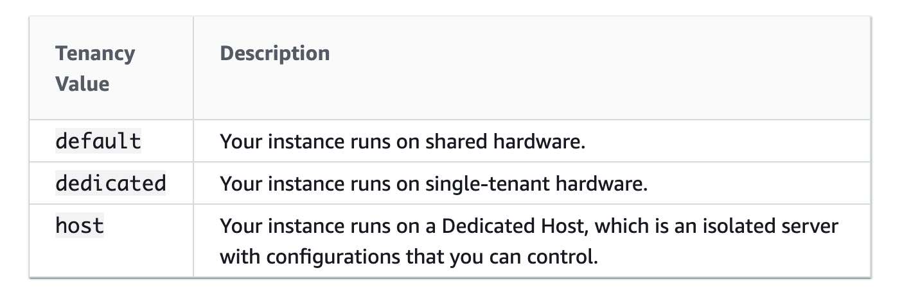
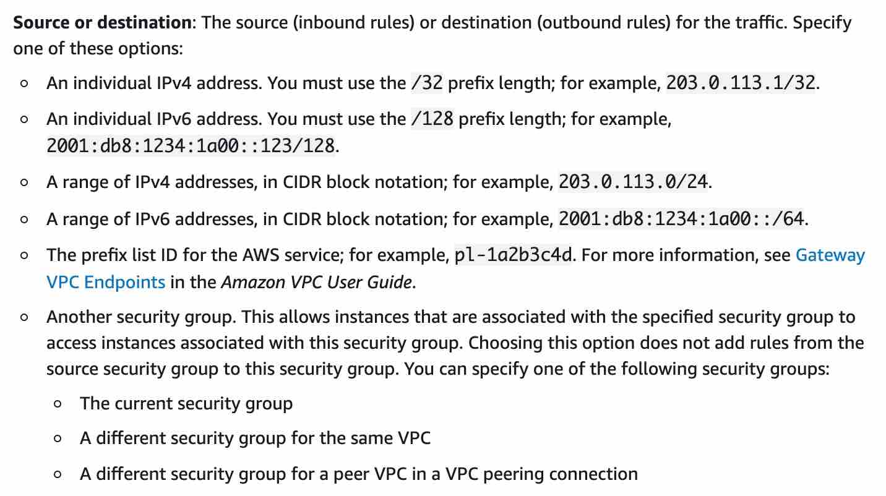
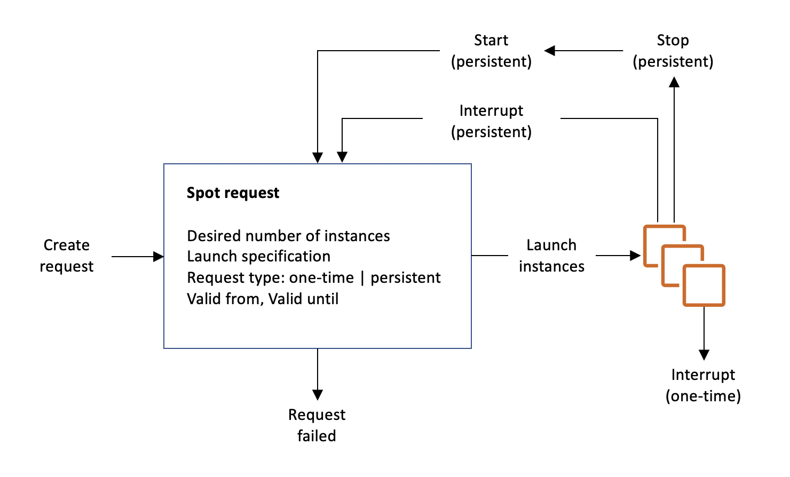

Slides: 05-slides-p041-077.pdf (full PDF p41-77). Page reference PDF p. 359 (part p. 8) = page 359 of the full slide PDF = page 8 of this section's PDF part; click to open the PDF at that page.
Loop: note → PDF part → exam points → Part A → Part B → mistakes again after 2 days.
Age ek nojore
EC2 er gora: instance, firewall, login, ar kivabe kinbe
Ei section exam er onek proshner bhitti: kon instance type, security group kivabe kaj kore (timeout vs connection refused, port), EC2 ke AWS permission kivabe dibe (IAM role), ar sobcheye beshi: kon purchasing option (On-Demand, Reserved, Savings Plans, Spot, Dedicated, Capacity Reservation). Scenario porle keyword dekhe option bachai korte parle onek number pabe.
1 Feb 2024 theke protita public IPv4 er dam ($0.005/ghonta), use na korleo
Spot request / Spot Fleet
Max price, 2 min notice, one-time vs persistent; Fleet = onek pool theke shosta capacity
Lecture 1 · AWS Budget Setup
Billing dekha ar Budget alert
Shohoj kore: Mobile e data pack er "80% shesh" SMS er moto. Budget banale khoroch ekta shima chharale AWS tomake email kore. Bhul kore kichu chalu rekhe dile boro bill asar age jante parbe.
IAM user billing dekhte pay na keno
Administrator IAM user holeo default e billing page e access denied.
Thik korar upay: root account e login → Account → "IAM user and role access to billing information" → Activate. Tarpor admin IAM user billing dekhte pay (refresh korte ektu somoy lage).
Billing and Cost Management e ki dekhbe
Jayga
Ki pabe
Home
Month-to-date cost, ei maser forecast, ager maser total
Bills
Mash choose kore "Charges by service": kon service, kon region e koto (jemon EC2 er bhitore NAT Gateway, EBS, Elastic IP alada line)
Free Tier
Free tier er current ar forecast usage; forecast lal hole free tier par hobe, bill ashbe
Budgets
Threshold e email alert
Duita budget template
Template
Kaj
Zero spend budget
1 cent khoroch holei email
Monthly cost budget
Jemon $10/mash. Email 3 bar: actual 85%, actual 100%, ar forecast 100% chhuyar ashonka hole
Exam: "Budget banao, khoroch limit par hole alert" → AWS Budgets. Cost Explorer alada jinish (khoroch dekha ar forecast), Section 30 e detail.
Lecture 2 · EC2 Basics · PDF p. 41-44(part p. 1-4)
EC2 ki, ki ki choose kora jay, User Data
Shohoj kore: EC2 = AWS er kach theke ekta computer bhara newa. Kon OS, koto CPU, koto RAM, koto disk, kon firewall, sob tumi thik koro. Ar "User Data" holo notun phone prothom bar on korle je setup wizard chale, sheta: ekbar-i chale.
EC2 = shudhu ekta service na (PDF p. 42(part p. 2))
EC2 = Elastic Compute Cloud = AWS e Infrastructure as a Service (IaaS).
Er bhitore: virtual machine bhara (EC2 instance), virtual drive e data (EBS), machine er moddhe load bhag (ELB), scale kora (ASG). EBS Section 7, ELB/ASG Section 8 e.
Script shudhu ekbar chale: instance er prothom start e. Pore ar kokhono na.
Kaj: update install, software install, internet theke common file download, ja khushi.
Script jto boro, boot e instance er kaj toto beshi.
User Data script root user hisebe chale (sudo lage na).
Instance type er udaharon table (t2.micro, c5d.4xlarge...) Lecture 4 er card e. Course e t2.micro use hoy: free tier e mashe 750 ghonta (mane ekta instance pura mash chalano).
Exam: "Prothom launch e software install / OS update / Java / Node.js automatically" → User Data (SSH kore haate na, AWS Support na, IAM role na, AWS Config na) (U05-Q6, B4-Q63, B6-Q6). ASG er sob instance e shell script → User Data (B4-Q13). "Script shudhu launch e ekbar" → User Data, default ei behavior, alada setting lage na (S6-Q11). User Data default e root privilege e chale, protibar restart e chale na (S5-Q19).
User Data vs Instance metadata: question e onek bar ashe (B2-Q24, S2-Q20, B4-Q42, B4-Q51, B4-Q55). Instance er nijer info (instance id, public/private IP, public keys) pete instance metadata: base URL http://169.254.169.254/latest/, public IP .../latest/meta-data/public-ipv4. .../latest/user-data/ shudhu launch script ferot dey. amar jana, course e nai
Lecture 3 · Create an EC2 Instance with EC2 User Data to have a Website Hands On · PDF p. 45(part p. 5)
Prothom EC2 launch: web server User Data diye
Shohoj kore: Console e form puron korar moto: naam, OS (AMI), size (instance type), chabi (key pair), firewall (security group), disk, ar sheshe boot script (User Data). Launch dile 10-15 second e computer ready, User Data nije nije web server boshiye dey.
Launch form er gurutto purno setting
Dhap
Ki dilam
Mone rakho
Name and tags
Name = My First Instance
Name ekta tag; aro tag add kora jay
AMI (base image)
Amazon Linux 2, 64-bit x86
AMI = OS; nijer AMI-o banano jay (Section 7)
Instance type
t2.micro (free tier)
Region e t2.micro na thakle t3.micro
Key pair
Notun: EC2Tutorial, type RSA
.pem = Mac, Linux, Windows 10+; .ppk = Windows 7/8 (PuTTY)
Network settings
Public IP pabe; notun SG launch-wizard-1
Rule: SSH from anywhere + HTTP from internet (web server er jonno)
Storage
8 GB gp2 root volume
Free tier e 30 GB EBS general purpose SSD. Delete on termination = Yes default: instance terminate korle volume-o delete
Advanced details
Ekdom niche User data e script paste
Script: update, httpd install, ekta HTML file lekha. Spot ar IAM instance profile option-o ekhane (pore)
Instance er state
Instance state (console e ja dekhlam)
pending10-15 sec→runningbill hoy→ Stopstopping→stoppedinstance bill nai→ Startpending
Terminate = instance muche fela (warning dey)
Stop korle instance er dam lage na; volume attached thake tai state/data thake.
Public IPv4: internet theke access er jonno. Private IPv4: AWS network er bhitore access er jonno.
Web page e "Hello World from 172.31.x.x" dekhay: oita private IP, kintu access korechi public IP diye.
Browser e http:// likhte hobe. https:// dile infinite loading (443 khola nai).
Stop → Start korle public IPv4 bodlate pare (54.x theke 3.250.x hoyechilo). Private IPv4 same thake. Fixed public IP chaile Elastic IP (Section 6).
Instance details e: instance ID, public/private IPv4, private DNS, instance type, AMI, key pair, Security tab e SG ar rule, Storage tab e volume.
Stop korle EBS volume er storage er dam tobuo lage. amar jana, course e nai
Free tier (t2.micro 750 ghonta) ar Amazon Linux 2, duitai course er por bodleche: "Course er por ki bodlalo" dekho.
Exam: "Resource ke purpose / owner / environment diye bhag koro" → Tags. Instance state proshne pending, running (ar rebooting) valid; "stand-by" EC2 er state na, oita Auto Scaling er (Section 8). "Kal connect hoyechilo, aj hoy na" → stop/start e public IP bodleche.
Lecture 4 · EC2 Instance Types Basics · PDF p. 46-51(part p. 6-11)
Instance type: naam porar niyom ar 4 family
Shohoj kore: Gari kenar moto: shohore choto gari (general purpose), race er jonno engine boro (compute), onek maal bohon (memory), ar boro gudam (storage). Kaj onujayi type bachai.
4 family: kon kaj e konta (PDF p. 47-50(part p. 7-10))
Family
Kiser upor jor
Use case (slide)
Naam (udaharon)
General Purpose (p. 47)
Compute, memory, networking er balance
Web server, code repository, nana rokom workload
t2.micro (course e), m5
Compute Optimized (p. 48)
High performance processor
Batch processing, media transcoding, high performance web server, HPC, scientific modeling & machine learning, dedicated gaming server
C (C5, C6)
Memory Optimized (p. 49)
Boro data set RAM e process
High performance relational/non-relational DB, distributed web scale cache (ElastiCache), in-memory DB for BI, real-time processing of big unstructured data
R (R = RAM), X1, High Memory, z1
Storage Optimized (p. 50)
Local storage e high, sequential read/write
High frequency OLTP, relational & NoSQL DB, cache for in-memory DB (Redis), data warehousing, distributed file system
Instance naam mukhosto lage na, kon family kon kaj e sheta lage.
Exam: "HPC / batch / media transcoding / ML / gaming server" → Compute Optimized (U05-Q4). "In-memory database / cache / BI / real-time big unstructured data" → Memory Optimized (U05-Q7). "High frequency OLTP, thousands of requests/sec, local storage, data warehouse, distributed file system" → Storage Optimized (U05-Q8). Trap: "database" duita family tei ache. In-memory shobdo dekhle Memory, OLTP / local storage IO dekhle Storage. "High, sequential read/write, very large data set, local storage" → Storage Optimized; B6-Q35 er key (Memory) bhul, thik uttor Storage. Instance size thik korte dekho app er I/O ar memory dorkar; peak load ELB/ASG diye scale out (B4-Q7).
Subtitle e r5.16xlarge "16 vCPU" bola, slide e 64; slide er ta niyechi. Website er naam subtitle e bhul shona, slide theke niyechi. Storage optimized er naam e ekta letter ("G") bujha jay ni, bad diyechi.
Lecture 5 · Security Groups & Classic Ports Overview · PDF p. 52-57(part p. 12-17)
Security Group: EC2 er firewall
Shohoj kore: Building er gate e guard er list: "ei ei manush, ei ei door diye dhukte parbe". List e nam na thakle guard dhukte dey na, ar bhitorer manush kichu tei jane na. Security group er list e shudhu "allow" thake, "deny" list nai.
Exam: "EC2 te traffic in/out control" → Security Group (NACL subnet level, Section 27; IAM policy API er jonno) (U05-Q2). "SG shudhu ek instance e" → False (U05-Q9). Rule er 2 type: Inbound, Outbound (B2-Q56). SSH hoy na → SG e port 22 from your IP, 3389 na, 443 na, IAM role na (B3-Q7). Remote Desktop hoy na → SG e 3389 (B6-Q53). Inbound source hote pare IP, CIDR, security group (prefix list-o); Internet Gateway ID na (S3-Q65). Web tier + DB tier: DB SG e source = web tier er SG, DB port e (1433 MSSQL), "all sources" na (S2-Q28).
Question S2-Q10: default security group e inbound rule thake "same SG er member theke allow"; notun banano SG te kono inbound allow nai. Tai default SG er instance ke ping kora jay, notun SG er ta ke na. amar jana, course e nai
Lecture 6 · Security Groups Hands On · PDF p. 55(part p. 15)
Console e security group: rule muchle ki hoy
EC2 console → left menu Network & Security → Security Groups. Dekha gelo 2 ta: default (AWS nije banay) ar launch-wizard-1 (launch er somoy toiri).
SG er nijer ID ache, instance er moto.
Inbound: SSH port 22 from 0.0.0.0/0, HTTP port 80 from 0.0.0.0/0.
Test: port 80 er rule delete → save → browser refresh → infinite loading = timeout. Rule abar add → sathe sathe kaj kore.
Source er option: CIDR (Custom, Anywhere-IPv4, Anywhere-IPv6, My IP), security group, prefix list.
"My IP" dile: tomar IP bodlale timeout khabe.
Outbound: All traffic IPv4 anywhere → instance er full internet access.
Ek instance e 1, 2, 3, 5 ta SG attach kora jay; rule gulo jog hoy. Ek SG onek instance e attach kora jay.
Exam: "Timeout" dekhle 100% security group age check koro (SSH, HTTP, jekono connection). SG rule change sathe sathe shob instance e lage, restart ba propagation er opekkha nai (demo te save korei kaj korlo) (B1-Q31, B6-Q21). CLI revoke-security-group-ingress = SG theke inbound (ingress) rule muche (B3-Q8) amar jana, course e nai.
Lecture 7 + course page 11 · SSH Overview, SSH Troubleshooting · PDF p. 58-60(part p. 18-20)
Kon computer theke kivabe SSH, ar error dekhle ki korbe
Shohoj kore: SSH = dur er Linux server e tomar terminal khola, jeno tumi oi machine er shamne boshe acho. Tool alada (ssh, PuTTY, browser), kintu sob gulo SSH protocol, port 22.
Exam: EC2 te login kore Key Pair diye; Access Key AWS API er jonno (B2-Q7). PuTTY e "No supported authentication methods available" → (1) .pem ke .ppk e convert korecho kina, (2) thik username (ec2-user Amazon Linux er) (B1-Q26). IAM permission ba "1 ghonta opekkha" na.
Subtitle e kichu jayga bhul shona chilo ("patching method" = PuTTY method, "control G" = Ctrl+D); thik kore likhechi.
Lecture 12 · EC2 Instance Connect · PDF p. 63(part p. 23)
EC2 Instance Connect: browser e SSH
Shohoj kore: Chabi (key file) pocket e rakhar dorkar nai. Console er "Connect" button e click korle AWS nije ekta temporary chabi instance e boshiye dey ar browser e terminal khule dey.
Exam: "Browser theke, key file chara SSH" → EC2 Instance Connect. Trap: eta-o port 22 chay; SG te 22 na thakle kaj korbe na.
Ekhon Amazon Linux 2 chara aro AMI te pre-installed, ar SG source e AWS er prefix list dewa jay: "Course er por ki bodlalo" dekho.
Subtitle e "Amazon NX2" = Amazon Linux 2; thik kore likhechi.
Lecture 13 · EC2 Instance Roles Demo
EC2 ke AWS permission: IAM Role, access key na
Shohoj kore: Office er computer e nijer bank password likhe rekhe asha bokami, je boshbe sei use korbe. EC2 te access key rakha-o tai. Tar bodole EC2 ke ekta ID card (IAM role) dao: card e ja permission, EC2 shudhu tai korte pare, password lage na.
Bhul vs thik
EC2 te aws configureaccess key + secret✕Account er je keu Instance Connect diye dhuke key pore nite pare
IAM RoleDemoRoleForEC2: IAMReadOnlyAccess→ attachEC2aws iam list-users kaj kore
Credentials EC2 te dewar ekmatro thik upay: IAM role.
Demo er dhap
Instance Connect diye dhuklam. Amazon Linux AMI te AWS CLI age theke installed.
aws iam list-users → "Unable to locate credentials. You can configure credentials by running aws configure".
aws configure e Access Key ID / Secret dewa "really, really bad idea". Kokhono na.
Section 4 e banano role DemoRoleForEC2 (policy: IAMReadOnlyAccess).
Instance → Actions → Security → Modify IAM role → role select → Save. Security tab e role dekhay.
Abar aws iam list-users → user list ashe, aws configure chara.
Role theke policy detach → access denied. Policy abar attach → prothome access denied, ektu pore kaj kore (IAM change propagate hote somoy lage).
Exam: "EC2 theke S3 / DynamoDB access, most secure" → IAM role, instance profile e attach (S2-Q3, S6-Q34). Access key config file e, local disk e, S3 e, ba nijer encryption diye rakha, sob bhul. Launch form er Advanced details e "IAM instance profile" field e role dewa hoy.
Lecture 14 · EC2 Instance Purchasing Options · PDF p. 64-73(part p. 24-33)
EC2 kenar 8 upay: kon workload e konta
Shohoj kore (resort er udaharon, PDF p. 72(part p. 32)): On-Demand = jokhon khushi eshe full dam. Reserved = age theke onek din er booking, discount. Savings Plans = "mashe eto taka khoroch korbo" commit, je kono room. Spot = khali room er nilam, beshi dam dile keu tomake ber kore dite pare. Dedicated Host = pura building book. Capacity Reservation = room book, na thakleo full dam.
Shob option ek table e (PDF p. 64-71(part p. 24-31))
Option
Commitment
Discount (slide)
Kokhon
Mone rakho
On-Demand (p. 65)
Nai
Nai (sobcheye beshi dam, upfront nai)
Short-term, uninterrupted, app kemon chalbe jana nai
Linux/Windows: per second, first minute er por. Onno OS: per hour
Reserved Instance (p. 66)
1 ba 3 bochor
Up to 72%
Steady-state (database er kotha bhabo)
Reserve: instance type, region, tenancy, OS. Scope: Regional ba Zonal (AZ e capacity reserve). RI Marketplace e kena-becha
Convertible RI (p. 66)
1 ba 3 bochor
Up to 66%
Long workload, instance bodlate chao
Change kora jay: instance type, family, OS, scope, tenancy
Savings Plans (p. 67)
1 ba 3 bochor, $/ghonta commit (jemon $10/hour)
Up to 72% (RI er soman)
Long workload, flexibility chai
Lock: instance family + region (M5 in us-east-1). Flexible: size, OS, tenancy. Commit er beshi use = On-Demand dam
"Specific AZ e capacity guarantee, commitment nai" → Capacity Reservation (Spot / Spot Fleet guarantee dey na).
RI ar lagbe na → RI Marketplace e becho ar instance terminate (B5-Q33).
Subtitle e Savings Plans "70%" ar "1, 2, 3 years" bola; slide (72%, 1 ba 3 bochor) niyechi.
Lecture 15 · IP Address Charges in AWS
Public IPv4 er ekhon dam lage
Shohoj kore: IPv4 address prithibite kome geche, tai AWS ekhon protita public IPv4 er bhara ney, tumi use koro ba na koro. Bachte chaile IPv6 (free), kintu sob ISP IPv6 support kore na.
Point
Detail
Kobe theke
1 February 2024
Dam
$0.005 per hour protita public IPv4 er (mashe prai $3.6), use hok ba na hok
EC2 free tier
Notun account er prothom 12 mash: mashe 750 ghonta public IPv4 (EC2 er jonno). Sob EC2 er public IP mile 750 er niche thakle free
Onno service
Free tier nai. Load balancer: protita AZ e ekta public IPv4 (3 AZ = 3 ta). RDS public access: public IPv4, charge
IPv6
AWS sob kichu IPv6 e nite chay. Kintu onek ISP IPv6 support kore na (test-ipv6.com e check), tai course IPv4 e. IPv6 use korle SG rule nijer banate hobe
Charge khujbe kivabe
Billing and Cost Management → Bills → charges by service, expand kore IPv4 charge dekho.
Amazon VPC IP Address Manager (IPAM) (VPC console er feature) → Public IP Insights: IPAM create (free tier), region select → account er sob public IP er info.
Exam: Ei lecture beshi cost awareness er jonno. Mone rakho: public IPv4 = charge (unused holeo); ELB protita AZ e public IP. Elastic IP-o public IPv4, tai running instance e attached thakleo ekhon charge; purono "attached EIP free" rule ar nai, B6-Q8 er 4 ta statement-i ekhon "wrong" (Elastic IP Section 6 e).
Subtitle e "AWS Public Insights service" bola, asole IPAM er Public IP Insights.
Lecture 16 · Spot Instances & Spot Fleet · PDF p. 74-77(part p. 34-37)
Shohoj kore: Tumi bolo "ghonta e max $0.05 dibo". Bazar dam (spot price) er niche thakle instance tomar. Bazar dam tomar max er upore uthle 2 minute somoy pao, tarpor instance stop ba terminate.
Target capacity meet korar chesta kore, price constraint mene.
Launch pool define koro: instance type (m5.large), OS, AZ. Onek pool dile fleet best ta bachai.
Capacity ba max cost e pouchale ar launch kore na.
Allocation strategy
Ki kore
Kokhon
lowestPrice
Sobcheye kom dam er pool theke
Cost optimization, short workload (exam e sobcheye popular)
diversified
Sob pool e chhoriye
Availability, long workload (ek pool gele baki thake)
capacityOptimized
Instance shonkhyar jonno optimal capacity er pool
Capacity beshi dorkar
priceCapacityOptimized (recommended)
Age highest capacity er pool, tar moddhe lowest price
Beshirbhag workload er best choice
Simple spot request = tumi exact instance type ar AZ bolo. Spot Fleet = "ei sob type, ei sob AZ theke, amake shostay dao".
AWS ekhon Spot Fleet ke legacy bole, ASG ba EC2 Fleet recommend kore: "Course er por ki bodlalo" dekho.
Exam: "Spot Fleet = Spot + optionally ..." → On-Demand (U05-Q12). "Monthly 2 ghontar big data job, nana size er server, failure sohoy" → Spot Fleet (shudhu Spot na, karon fleet onek pool theke shosta bachai) (S2-Q49). Cancel request ≠ terminate; persistent request interrupt er por abar open (S3-Q51). Spot interrupt e 2 minute notice (S6-Q2). "Distributed, failure theke gracefully recover, most cost-effective" → Spot (B4-Q31). Default interruption behavior = terminate (one-time request e shudhu terminate) (B4-Q21).
Billing: AWS nije Spot instance prothom ghonta r moddhe interrupt korle kono charge nai; tumi nije stop/terminate korle jototuku chalale toto second er dam (Linux/Windows). Tai "bid $0.03, 40 min pore price $0.05, AWS terminate" → $0.00 (B1-Q65, B6-Q57). Source: Billing for interrupted Spot Instances. amar jana, course e nai
Subtitle e spot dam "$0.4" bola, graph ar slide p. 73 onujayi prai $0.04; thik kore likhechi.
Lecture 17 · EC2 Instances Launch Types Hands On · PDF p. 75(part p. 35)
Default max price = On-Demand price e cap; nijer max price-o dewa jay.
Request type default one-time: reclaim hole interruption behavior shudhu terminate.
Persistent: validity (date ba no expiry), interruption behavior hibernate ba stop.
Block duration: 31 Dec 2022 e chole jabe bola, tai instructor bujhay ni (outdated).
Baki purchasing page
Page
Ki dekhlam
Reserved Instances
Purchase → type (c5.large) search → offerings: term 1 ba 3 bochor, Standard ba Convertible, All / Partial / No upfront, quantity → cart. Instructor: RI hoyto pore chole jabe, Savings Plans recommended (beshi shohoj)
Savings Plans
1 ba 3 bochor e ghonta proti dollar commit; instance type, AZ e flexibility
Dedicated Hosts
License Manager e niye jay (license hisebe bhabo). Allocate Dedicated Host: naam, instance family (c5), AZ; ek host e onek instance type. Khub dami
Capacity Reservations
Instance type (m5.2xlarge), AZ, shonkhya (4), shesh: manually ba specific time. Launch na korleo dam dite hobe
Exam: Spot Fleet capacity vCPU / memory unit e dewa jay; interruption behavior terminate / stop / hibernate. One-time request e shudhu terminate, persistent e stop / hibernate.
Subtitle e RI term "12-months or 13-months" bola, asole 1 ba 3 bochor (slide p. 66); ar "strong fleet" er moto ekta shobdo bujha jay ni, bad diyechi.
Confusing pairs
Pair
Parthokko
Kokhon konta
Timeout vs Connection refused
Timeout: traffic pouchay-i na (SG block). Refused: pouchay, kintu app/SSH chole na
Purapuri bondho: age request cancel, pore terminate
lowestPrice vs diversified
lowestPrice: shostar pool, short workload. diversified: sob pool e, availability, long workload
Best for most → priceCapacityOptimized
EC2 Instance Connect vs SSH
Instance Connect: browser, temporary key, kintu SSH-i, port 22 lage
Key file chara browser e → Instance Connect
Course er por ki bodlalo
Course er content e
Free Tier bodleche (15 July 2025). Er age khola account: 12 mash, free tier type t2.micro / t3.micro (course er 750 ghonta). Er pore khola account: Free plan 6 mash ba credit shesh howa porjonto ($100 sign-up + aro $100 porjonto); free tier type t3.micro, t3.small, t4g.micro, t4g.small, c7i-flex.large, m7i-flex.large. EC2 Free Tier usage. Exam e free tier ashe na.
Amazon Linux 2 er support shesh: 2026-06-30. AWS bole Amazon Linux 2023 e jao (support June 2029 porjonto). Course er hands-on AL2 te; notun lab e AL2023 nao. Amazon Linux 2 FAQs
EC2 Instance Connect ekhon shudhu AL2 te na. Pre-installed: AL2023 standard AMI, Amazon Linux 2 (2.0.20190618+), Ubuntu 20.04+, kichu macOS version. Install EC2 Instance Connect
Instance Connect er SG rule: console theke connect korle inbound SSH er source e AWS er prefix list com.amazonaws.<region>.ec2-instance-connect (IPv6 er jonno alada) dewa jay, 0.0.0.0/0 lage na. Public IP chara connect er jonno EC2 Instance Connect Endpoint. Instance Connect prerequisites
Spot block bondho. 1 July 2021 theke notun customer pay na, 31 Dec 2022 porjonto purono customer der support. AWS blog (update note)
Spot max price: console e ekhon "No maximum price" (Recommended): current spot price e chale, On-Demand er beshi hoy na. Max price dile interrupt beshi hoy; dam shob somoy current spot price. request-spot-instances CLI legacy API. Create a Spot Instance request
Spot Fleet legacy. AWS: "We strongly discourage using Spot Fleet because it uses a legacy API with no planned investment." Bodole Auto Scaling group (best practice) ba EC2 Fleet; allocation strategy price-capacity-optimized recommended. Which fleet method to use. Exam e Spot Fleet ekhono ashe.
Question e purono jinish
Scheduled Reserved Instances ar kena jay na; capacity er jonno On-Demand Capacity Reservation, discount er jonno Savings Plans (S3-Q25). AWS blog (update note)
Penetration testing: nijer EC2 (ar onno permitted service) e prior approval chara kora jay; C2 test e approval lage. B5-Q28 er key (approval lage) purono, ekhon thik D (AWS pen-testing policy).
Tenancy change:stopped instance er tenancy launch er pore CLI (modify-instance-placement) diye bodlano jay, conversion path OS/license er upor. "Shudhu dedicated ⇄ host" (S3-Q16) purono rule. Change the tenancy
EC2 limit: "20 instance per region" purono; ekhon On-Demand quota vCPU e, per Region, Service Quotas theke increase (B3-Q47). EC2 service quotas
Exam e ki mone rakhbo
EC2 basics, User Data, Budgets
EC2 = IaaS. Launch e choose: OS, CPU, RAM, storage (EBS/EFS ba instance store), network/public IP, SG, User Data.
"Launch e software install / update / Java / Node.js automatically" → User Data, IAM role / AWS Config / metadata na (U05-Q6, B4-Q13, B4-Q63, B6-Q6).
User Data: shudhu prothom boot e ekbar, root hisebe; restart e abar chale na (S5-Q19, S6-Q11).
Instance er nijer info (public/private IP, instance id) → instance metadatahttp://169.254.169.254/latest/meta-data/; /user-data/ na (B2-Q24, S2-Q20, B4-Q42, B4-Q51, B4-Q55).
Stop → start e public IP bodlay, private IP same. State: pending, running (rebooting); "stand-by" ASG er (B3-Q31).
Resource bhag (purpose / owner / env) → Tags (B1-Q6). Budget alert → AWS Budgets, Cost Explorer na (B1-Q25).
Instance types
m5.2xlarge = class + generation + size.
HPC, batch, media transcoding, ML, gaming → Compute Optimized (U05-Q4).
In-memory DB, cache, BI, real-time big unstructured data → Memory Optimized (U05-Q7).
High frequency OLTP, local storage e high sequential read/write, data warehouse, distributed FS → Storage Optimized (U05-Q8; B6-Q35 er key bhul, thik Storage).
Size choose: app er I/O + memory dorkar (B4-Q7).
Security Group ar ports
EC2 er firewall = Security Group; NACL subnet level, IAM policy API (U05-Q2).
Source: IP, CIDR, security group, prefix list; Internet Gateway ID na (S3-Q65). Tier-to-tier → source = ager tier er SG, thik port (DB 1433 from SG-A) (S2-Q28).
Default SG: same SG er member theke inbound allow; notun SG: kono inbound nai (S2-Q10). revoke-security-group-ingress = inbound rule muche (B3-Q8).
Ports: 22 SSH/SFTP (Linux), 21 FTP, 80 HTTP, 443 HTTPS, 3389 RDP (Windows). SSH hoy na → 22 from your IP (B3-Q7); RDP hoy na → 3389 (B6-Q53).
Login ar permission
Instance e login → Key Pair; Access Key na (B2-Q7).
Always-on + delay-tolerant batch → RI + Spot (S2-Q35). RI ar lagbe na → Marketplace e becho + terminate (B5-Q33).
BYOL, per-socket/per-core license, core/socket visibility, compliance → Dedicated Host (U05-Q10, U05-Q11, S3-Q11). Shudhu single-tenant, kom dam → Dedicated Instance (S5-Q23).
Specific AZ e capacity guarantee, commitment nai → Capacity Reservation: discount nai, use na korleo On-Demand dam; discount chaile Regional RI / Savings Plans er sathe.
On-Demand: Linux/Windows per second (first minute er por), onno OS per hour.
Spot ar Spot Fleet
Spot price > max price → 2 minute notice, tarpor stop ba terminate. Default = terminate (B4-Q21, S6-Q2).
Persistent request interrupt er por abar launch kore. Cancel request ≠ terminate: age request cancel, pore instance terminate (S3-Q51).
AWS prothom ghonta e interrupt korle charge $0 (B1-Q65, B6-Q57). Spot terminate er karon → aws ec2 describe-instances (B5-Q3).
Scheduled RI (S3-Q25) ar kena jay na. Pen test ekhon approval chara (B5-Q28 key purono). Tenancy change ekhon onek dike (S3-Q16). EC2 limit ekhon vCPU-based, soft, per Region (B3-Q47). Attached EIP-o ekhon charge (B6-Q8).
Part A: Udemy course quiz (12)
The instructor's own section quiz: warm-up, direct questions. Answer first, then press Check.
A1U05-Q1Udemy quiz · sec 05 · Q1
Which EC2 Purchasing Option can provide you the biggest discount, but it is not suitable for critical jobs or databases?
Correct: C. Why it is right
Spot Instances holo AWS er sobcheye cheap option: On-Demand er tulonay up to 90% discount (PDF p. 68(part p. 28)).
Kintu AWS jekono shomoy instance ta ferot nite pare (spot price tomar max price er upore gele), tai course bole: not suitable for critical jobs or databases. Batch job, data analysis, image processing er moto failure-resilient kaj er jonno Spot best.
Why the other options are wrong
A. Convertible RI long workload er jonno, instance type/family change kora jay; discount up to 66%, Spot er 90% er cheye kom.
B. Dedicated Host hocche sobcheye expensive option (puro physical server book); compliance/BYOL er jonno, discount er jonno na.
Keyword:biggest discount + not suitable for critical jobs or databases → Spot Instances
Instructor feedback (English)
A: Convertible Reserved Instances are good for long workloads with flexible instances. But, it does not provide you the biggest discount.
B: Dedicated Hosts are good for companies with strong compliance needs or for software that have complicated licensing models. This is the most expensive EC2 Purchasing Option available.
C: Spot Instances are good for short workloads and this is the cheapest EC2 Purchasing Option. But, they are less reliable because you can lose your EC2 instance.
A2U05-Q2Udemy quiz · sec 05 · Q2
What should you use to control traffic in and out of EC2 instances?
Correct: B. Why it is right
Security Group holo EC2 instance er charpashe firewall. Eta control kore kon traffic instance e dhukte parbe (inbound) ar kon traffic ber hote parbe (outbound) (PDF p. 52-53(part p. 12-13)).
SG te port, IP range (IPv4/IPv6) ba onno SG reference kore rule likha hoy.
Why the other options are wrong
A. NACL subnet level e kaj kore, instance level e na; eta pore VPC section e ashbe. EC2 traffic control er main answer SG.
C. IAM Policy AWS API/service access control kore (ke ki action korte parbe), network traffic na.
Keyword:control traffic in and out of EC2 instances → Security Groups
Instructor feedback (English)
A: This is a distractor. We will see this service later in the course. NACL operates at the subnet level.
B: Security Groups operate at the EC2 instance level and can control traffic.
C: IAM Policies enable you to manage access to AWS services and resources securely.
A3U05-Q3Udemy quiz · sec 05 · Q3
How long can you reserve an EC2 Reserved Instance?
Correct: A. Why it is right
Reserved Instance er reservation period shudhu 1 year (+discount) othoba 3 years (+++discount) (PDF p. 66(part p. 26)).
Majhamajhi kono duration (jemon 2 years ba 18 months) kena jay na. Savings Plans o 1 ba 3 year commitment.
Why the other options are wrong
B. 2 ba 4 year er kono RI term nai; shudhu 1 ar 3 year.
C. 6 month er RI term nai. Minimum term 1 year.
D. Jekono duration choose kora jay na; fixed term shudhu 1 year ba 3 year.
Keyword:how long reserve → 1 or 3 years
Instructor feedback (English)
A: EC2 Reserved Instances can be reserved for 1 or 3 years only.
D: You must reserve the instance only for 1 or 3 years, not any time in between.
A4U05-Q4Udemy quiz · sec 05 · Q4
You would like to deploy a High-Performance Computing (HPC) application on EC2 instances. Which EC2 instance type should you choose?
Correct: B. Why it is right
HPC (High Performance Computing) holo compute-intensive kaj, mane powerful CPU lage.
Course slide e Compute Optimized er use case list e direct ache: batch processing, media transcoding, HPC, scientific modeling & ML, gaming server (PDF p. 48(part p. 8)).
Why the other options are wrong
A. Storage Optimized local storage e high sequential read/write er jonno (OLTP, data warehouse), CPU-heavy HPC er jonno na.
C. Memory Optimized boro data set RAM e process korar jonno (in-memory DB, cache), HPC er CPU need er jonno na.
D. General Purpose CPU, memory, network er balance; web server/code repo er moto kaj er jonno, high-performance compute er jonno na.
A: Storage Optimized EC2 instances are great for workloads requiring high, sequential read/write access to large data sets on local storage.
B: Compute Optimized EC2 instances are great for compute-intensive workloads requiring high-performance processors (e.g., batch processing, media transcoding, high-performance computing, scientific modeling & machine learning, and dedicated gaming servers).
C: Memory Optimized EC2 instances are great for workloads requiring large data sets in memory.
D: General Purpose EC2 instances are great for a diversity of workloads that require a balance between computing, memory, and network.
A5U05-Q5Udemy quiz · sec 05 · Q5
Which EC2 Purchasing Option should you use for an application you plan to run on a server continuously for 1 year?
Correct: A. Why it is right
Server continuously 1 year cholbe = steady, long workload. Eta exactly Reserved Instance er use case: 1 ba 3 year commit korle On-Demand er cheye onek discount (up to 72%) (PDF p. 66(part p. 26)).
Course: RI steady-state usage er jonno recommended.
Why the other options are wrong
B. Spot cheap kintu jekono shomoy interrupt hote pare; continuously cholte hobe emon app er jonno reliable na.
C. On-Demand short, unpredictable workload er jonno; 1 year continuously chalale full price dite hobe, RI er cheye beshi khoroch.
Keyword:run continuously for 1 year → Reserved Instances
Instructor feedback (English)
A: Reserved Instances are good for long workloads. You can reserve EC2 instances for 1 or 3 years.
B: Spot Instances are good for short workloads but are less reliable.
C: On-demand Instances are good for short workloads with predictable pricing.
A6U05-Q6Udemy quiz · sec 05 · Q6
You are preparing to launch an application that will be hosted on a set of EC2 instances. This application needs some software installation and some OS packages need to be updated during the first launch. What is the best way to achieve this when you launch the EC2 instances?
Correct: C. Why it is right
EC2 User Data diye instance bootstrap kora hoy: launch er shomoy script dile seta first start e ekbar run hoy, root user hishebe (PDF p. 44(part p. 4)).
Software install, OS update, file download, sob automate kora jay. Onek instance hole proti ta te manually kaj korte hoy na.
Why the other options are wrong
A. Kaj hobe, kintu manual SSH kore proti instance e install kora slow ar error-prone; automation er best way na.
B. AWS Support tomar instance e script run kore na; eta tomar nijer dayitto (User Data diye).
Keyword:software installation + OS update during the first launch → bash script in EC2 User Data
Instructor feedback (English)
A: This can be done, but a lot of work to do that takes a lot of time especially if your application will be hosted on a large number of EC2 instances.
B: There's no such thing. You can't contact AWS Support to install software and packages on your EC2 instances.
C: EC2 User Data is used to bootstrap your EC2 instances using a bash script. This script can contain commands such as installing software/packages, download files from the Internet, or anything you want.
A7U05-Q7Udemy quiz · sec 05 · Q7
Which EC2 Instance Type should you choose for a critical application that uses an in-memory database?
Correct: C. Why it is right
In-memory database mane data RAM e thake, tai onek memory lage.
Memory Optimized instance boro data set memory te fast process korar jonno; course use case: in-memory databases, distributed cache, real-time big data processing (PDF p. 49(part p. 9)).
Why the other options are wrong
A. Compute Optimized CPU-heavy kaj er jonno (HPC, batch, transcoding), RAM-heavy in-memory DB er jonno na.
B. Storage Optimized local disk e high sequential I/O er jonno; in-memory DB er main need RAM, disk na.
D. General Purpose balanced resource dey; critical in-memory DB er boro RAM need er jonno best fit na.
Keyword:in-memory database → Memory Optimized
Instructor feedback (English)
A: Compute Optimized EC2 instances are great for compute-intensive workloads requiring high-performance processors (e.g., batch processing, media transcoding, high-performance computing, scientific modeling & machine learning, and dedicated gaming servers).
B: Storage Optimized EC2 instances are great for workloads requiring high, sequential read/write access to large data sets on local storage.
C: Memory Optimized EC2 instances are great for workloads requiring large data sets in memory.
D: General Purpose EC2 instances are great for a diversity of workloads that require a balance between computing, memory, and network.
A8U05-Q8Udemy quiz · sec 05 · Q8
You have an e-commerce application with an OLTP database hosted on-premises. This application has popularity which results in its database has thousands of requests per second. You want to migrate the database to an EC2 instance. Which EC2 Instance Type should you choose to handle this high-frequency OLTP database?
Correct: B. Why it is right
Course slide e Storage Optimized er use case list e prothomei ache: High frequency online transaction processing (OLTP) systems (PDF p. 50(part p. 10)).
Thousands of requests/second mane local storage e onek fast read/write (high IOPS) lage, ja Storage Optimized dey.
Why the other options are wrong
A. Compute Optimized CPU-heavy kaj er jonno; high-frequency OLTP er bottleneck disk I/O, CPU na.
C. Memory Optimized o database er jonno use hoy, kintu course slide e high frequency OLTP specifically Storage Optimized e listed; exam e ei keyword e Storage Optimized.
D. General Purpose balanced; thousands of transactions/second er high I/O er jonno optimized na.
A: Compute Optimized EC2 instances are great for compute-intensive workloads requiring high-performance processors (e.g., batch processing, media transcoding, high-performance computing, scientific modeling & machine learning, and dedicated gaming servers).
B: Storage Optimized EC2 instances are great for workloads requiring high, sequential read/write access to large data sets on local storage.
C: Memory Optimized EC2 instances are great for workloads requiring large data sets in memory.
D: General Purpose EC2 instances are great for a diversity of workloads that require a balance between computing, memory, and network.
A9U05-Q9Udemy quiz · sec 05 · Q9
Security Groups can be attached to only one EC2 instance.
Correct: A. Why it is right
Statement ta False. Ekta Security Group multiple instances e attach kora jay, ar ekta instance e multiple SG o thakte pare (PDF p. 55(part p. 15)).
SG ekta region/VPC combination e locked thake.
Why the other options are wrong
B. Bhul: SG ar instance er moddhe one-to-one relation nai; ek SG onek instance e lagano jay.
Keyword:attached to only one EC2 instance → False (multiple instances possible)
Instructor feedback (English)
A: Security Groups can be attached to multiple EC2 instances within the same AWS Region/VPC.
A10U05-Q10Udemy quiz · sec 05 · Q10
You're planning to migrate on-premises applications to AWS. Your company has strict compliance requirements that require your applications to run on dedicated servers. You also need to use your own server-bound software license to reduce costs. Which EC2 Purchasing Option is suitable for you?
Correct: B. Why it is right
Duto shorto: strict compliance (dedicated server lagbe) + own server-bound software license (BYOL).
Dedicated Host e puro physical server tomar; compliance requirement meet kore ar per-socket/per-core license use kora jay (PDF p. 69(part p. 29)).
Why the other options are wrong
A. Convertible RI shudhu billing discount + instance type change er flexibility; dedicated server ba BYOL license support dey na.
C. Spot shared hardware e chole ar jekono shomoy interrupt hoy; compliance ba server-bound license kono tai mele na.
A: Convertible Reserved Instances are good for long workloads with flexible instances. But, it does not provide you the biggest discount.
B: Dedicated Hosts are good for companies with strong compliance needs or for software that have complicated licensing models. This is the most expensive EC2 Purchasing Option available.
C: Spot Instances are good for short workloads and this is the cheapest EC2 Purchasing Option. But, they are less reliable because you can lose your EC2 instance.
A11U05-Q11Udemy quiz · sec 05 · Q11
You would like to deploy a database technology on an EC2 instance and the vendor license bills you based on the physical cores and underlying network socket visibility. Which EC2 Purchasing Option allows you to get visibility into them?
Correct: C. Why it is right
License bill hoy physical cores ar sockets er upor. Tai underlying hardware dekhte (visibility) parte hobe.
Shudhu Dedicated Host physical server er lower-level hardware er visibility dey, tai per-socket/per-core/per-VM license er jonno eta lage (PDF p. 69(part p. 29)).
Why the other options are wrong
A. Spot shared hardware e chole, physical core/socket er visibility dey na.
B. On-Demand ekta billing option; shared hardware, physical socket/core dekha jay na.
D. Reserved Instance shudhu discount; hardware visibility dey na.
B: Spot Fleet is a set of Spot Instances and optionally On-demand Instances. It allows you to automatically request Spot Instances with the lowest price.
Part B: Practice exam questions (48)
Everything these questions need is covered up to this section (in your study order). Answer first, ~2 min per question. Then read every explanation, also for the ones you got right.
B1B1-Q25Bonso set 1 · Q25Billing and Cost Management
Which service can help you manage the budgets for all your AWS resources?
Correct: C. Why it is right
AWS Budgets diye cost/usage er budget set kora jay, ar actual ba forecasted cost threshold cross korle email/SNS alert pathay.
Course er Section 5 er prothom lecture e (AWS Budget Setup) eta dekhano hoy: zero-spend budget, monthly cost budget (85%, 100% e email).
Why the other options are wrong
A. Cost Explorer cost visualize, analyze ar forecast kore; budget set kore alert dewar main tool na.
B. Cost Allocation Tags resource er cost tag diye group kore report e dekhay; budget manage kore na.
D. Payment History shudhu ager payment er list; budget set ba track kore na.
Keyword:manage the budgets → AWS Budgets
Original explanation (English)
AWS Budgets gives you the ability to set custom budgets that alert you when your costs or usage exceed (or are forecasted to exceed) your budgeted amount.
Budgets can be tracked at the monthly, quarterly, or yearly level, and you can customize the start and end dates. You can further refine your budget to track costs associated with multiple dimensions, such as AWS service, linked account, tag, and others. Budget alerts can be sent via email and/or Amazon Simple Notification Service (SNS) topic.
You can also use AWS Budgets to set a custom reservation utilization target and receive alerts when your utilization drops below the threshold you define. RI utilization alerts support Amazon EC2, Amazon RDS, Amazon Redshift, and Amazon ElastiCache reservations.
Budgets can be created and tracked from the AWS Budgets dashboard or via the Budgets API.
Which instance type is best to use for workloads that require high, sequential read and write access to very large data sets on local storage?
⚠ Answer key doubtful. Key says: B; verified answer: A. 'High, sequential read and write access to very large data sets on local storage' — eta Storage Optimized instance er definition (explanation eo tai bola). Key 'Memory Optimized' bhul; thik answer A. Link: https://aws.amazon.com/ec2/instance-types/
Correct: B. Why it is right
Answer key B (Memory Optimized) dey, kintu eta mis-key. Stem er line "high, sequential read and write access to very large data sets on local storage" hubohu Storage Optimized er definition (PDF p. 50(part p. 10)), original explanation o tai bole.
Thik answer A (Storage Optimized). Memory Optimized holo boro data set RAM e process korar jonno (PDF p. 49(part p. 9)), local storage er jonno na.
Why the other options are wrong
A. Asole eta-i thik answer: local storage e high sequential read/write = Storage Optimized er definition (PDF p. 50(part p. 10)). Key ta bhul.
C. Compute Optimized CPU-heavy kaj er jonno (HPC, batch, transcoding), local storage I/O er jonno na.
D. General Purpose balanced; very large data set er high sequential local I/O er jonno optimized na.
Keyword:high, sequential read and write + local storage → Storage Optimized (key B bhul)
Original explanation (English)
Storage optimized instances are designed for workloads that require high, sequential read and write access to very large data sets on local storage. They are optimized to deliver tens of thousands of low-latency, random I/O operations per second (IOPS) to applications.
B3S3-Q11Stephane set 3 · Q11Design Cost-Optimized Architectures
A financial services company is looking to move its on-premises IT infrastructure to AWS Cloud. The company has multiple long-term server bound licenses across the application stack and the CTO wants to continue to utilize those licenses while moving to AWS. As a solutions architect, which of the following would you recommend as the MOST cost-effective solution?
Correct: D. Why it is right
Server-bound license (per-socket, per-core, per-VM) cholte thakbe = Dedicated Host. Eta puro physical server tomar, hardware er visibility dey, tai BYOL license use kora jay (PDF p. 69(part p. 29)).
Existing license reuse korle notun license kinte hoy na, tai eta MOST cost-effective.
Why the other options are wrong
A. On-Demand shared hardware e chole; server-bound license er jonno physical socket/core visibility nai.
B. RI shudhu billing discount; shared hardware, server-bound license use kora jay na.
C. Dedicated Instance hardware dedicated holeo physical server er visibility/control dey na; server-bound license er jonno Dedicated Host lage.
Keyword:long-term server bound licenses continue korbe → Dedicated Hosts
Original explanation (English)
Correct option:
"Use EC2 dedicated hosts"
You can use Dedicated Hosts to launch Amazon EC2 instances on physical servers that are dedicated for your use. Dedicated Hosts give you additional visibility and control over how instances are placed on a physical server, and you can reliably use the same physical server over time. As a result, Dedicated Hosts enable you to use your existing server-bound software licenses like Windows Server and address corporate compliance and regulatory requirements.
Incorrect options:
"Use EC2 dedicated instances" - Dedicated instances are Amazon EC2 instances that run in a VPC on hardware that's dedicated to a single customer. Your dedicated instances are physically isolated at the host hardware level from instances that belong to other AWS accounts. Dedicated instances may share hardware with other instances from the same AWS account that are not dedicated instances. Dedicated instances cannot be used for existing server-bound software licenses.
"Use EC2 on-demand instances" and "Use EC2 reserved instances" - Amazon EC2 presents a virtual computing environment, allowing you to use web service interfaces to launch instances with a variety of operating systems, load them with your custom application environment, manage your network’s access permissions, and run your image using as many or few systems as you desire.
Amazon EC2 provides the following purchasing options to enable you to optimize your costs based on your needs:
On-Demand Instances – Pay, by the second, for the instances that you launch.
Reserved Instances – Reduce your Amazon EC2 costs by making a commitment to a consistent instance configuration, including instance type and Region, for a term of 1 or 3 years.
Neither on-demand instances nor reserved instances can be used for existing server-bound software licenses.
B4S3-Q16Stephane set 3 · Q16Design Cost-Optimized Architectures⚠ outdatednot in course
An IT company is looking to move its on-premises infrastructure to AWS Cloud. The company has a portfolio of applications with a few of them using server bound licenses that are valid for the next year. To utilize the licenses, the CTO wants to use dedicated hosts for a one year term and then migrate the given instances to default tenancy thereafter. As a solutions architect, which of the following options would you identify as CORRECT for changing the tenancy of an instance after you have launched it? (Select two)
Choose 2 answers
⚠ Outdated: Ekhon stopped instance er tenancy shared (default), dedicated ar host er moddhe jekono dike change kora jay (CLI modify-instance-placement, license er shorto mene). Tai 'shudhu dedicated<->host' rule purono, ar 'select two' ekhon ambiguous. source
Not in the course: Launch er pore instance tenancy change kora course e porano hoy na.
Correct: A, B. Why it is right
Purono rule: launch er pore instance er tenancy shudhu dedicated → host ba host → dedicated change kora jeto. Tai key A + B.
Aajker kotha: ekhon stopped instance er tenancy shared (default), dedicated ar host er moddhe jekono dike change kora jay (license er shorto mene). Tai A, B ekhono true, kintu C, D, E o ekhon possible, ar "select two" ambiguous. Note: instance tenancy change course e porano hoy na.
Why the other options are wrong
C. Purono rule e default → dedicated allowed chilo na; ekhon stopped instance e possible, tai question ta purono.
D. Purono rule e dedicated → default allowed chilo na (CTO er plan er eta-i problem chilo); ekhon stopped instance e possible.
E. Purono rule e default → host allowed chilo na; ekhon stopped instance e possible.
Keyword:changing the tenancy after launch → (purono rule) dedicated ↔ host
Original explanation (English)
Correct options:
"You can change the tenancy of an instance from dedicated to host"
"You can change the tenancy of an instance from host to dedicated"
Each EC2 instance that you launch into a VPC has a tenancy attribute. This attribute has the following values.

via - https://docs.aws.amazon.com/autoscaling/ec2/userguide/as-instance-monitoring.html
By default, EC2 instances run on a shared-tenancy basis.
Dedicated Instances are Amazon EC2 instances that run in a virtual private cloud (VPC) on hardware that's dedicated to a single customer. Dedicated Instances that belong to different AWS accounts are physically isolated at the hardware level. However, Dedicated Instances may share hardware with other instances from the same AWS account that is not Dedicated Instances.
A Dedicated Host is also a physical server that's dedicated to your use. With a Dedicated Host, you have visibility and control over how instances are placed on the server.
Incorrect options:
"You can change the tenancy of an instance from default to dedicated" - You can only change the tenancy of an instance from dedicated to host, or from host to dedicated after you've launched it. Therefore, this option is incorrect.
"You can change the tenancy of an instance from dedicated to default" - You can only change the tenancy of an instance from dedicated to host, or from host to dedicated after you've launched it. Therefore, this option is incorrect.
"You can change the tenancy of an instance from default to host" - You can only change the tenancy of an instance from dedicated to host, or from host to dedicated after you've launched it. Therefore, this option is incorrect.
B5S5-Q23Stephane set 5 · Q23Design Secure Applications and Architectures
A health-care solutions company wants to run their applications on single-tenant hardware to meet regulatory guidelines.
Which of the following is the MOST cost-effective way of isolating their Amazon EC2 instances to a single tenant?
Correct: A. Why it is right
Single-tenant hardware lagbe, kintu host-level control/BYOL er kotha nai. Dedicated Instance e hardware tomar jonno dedicated (onno customer share kore na) ar eta Dedicated Host er cheye sasta (PDF p. 70(part p. 30)).
Dedicated Host sobcheye expensive (PDF p. 69(part p. 29)), tai MOST cost-effective holo Dedicated Instances.
Why the other options are wrong
B. Spot shared hardware e chole; single-tenant requirement mele na.
C. Dedicated Host single-tenant thik, kintu sobcheye expensive; physical server control lagbe na, tai cost-effective na.
D. On-Demand default shared tenancy; hardware isolation nai.
Keyword:single-tenant hardware + MOST cost-effective → Dedicated Instances
Original explanation (English)
Correct option:
Dedicated Instances - Dedicated Instances are Amazon EC2 instances that run in a virtual private cloud (VPC) on hardware that's dedicated to a single customer. Dedicated Instances that belong to different AWS accounts are physically isolated at a hardware level, even if those accounts are linked to a single-payer account. However, Dedicated Instances may share hardware with other instances from the same AWS account that are not Dedicated Instances.
A Dedicated Host is also a physical server that's dedicated for your use. With a Dedicated Host, you have visibility and control over how instances are placed on the server.
Differences between Dedicated Hosts and Dedicated Instances:
Spot Instances - A Spot Instance is an unused EC2 instance that is available for less than the On-Demand price. Your Spot Instance runs whenever capacity is available and the maximum price per hour for your request exceeds the Spot price. Any instance present with unused capacity will be allocated. Even though this is cost-effective, it does not fulfill the single-tenant hardware requirement of the client and hence is not the correct option.
Dedicated Hosts - An Amazon EC2 Dedicated Host is a physical server with EC2 instance capacity fully dedicated to your use. Dedicated Hosts allow you to use your existing software licenses on EC2 instances. With a Dedicated Host, you have visibility and control over how instances are placed on the server. This option is costlier than the Dedicated Instance and hence is not the right choice for the current requirement.
On-Demand Instances - With On-Demand Instances, you pay for compute capacity by the second with no long-term commitments. You have full control over its lifecycle—you decide when to launch, stop, hibernate, start, reboot, or terminate it. Hardware isolation is not possible and on-demand has one of the costliest instance charges and hence is not the correct answer for current requirements.
You are instructed by your manager to create a publicly accessible EC2 instance by using an Elastic IP (EIP) address and also to give him a report on how much it will cost to use that EIP.
Which of the following statements are wrong regarding the pricing of EIP?
⚠ Outdated: Feb 1, 2024 theke sob public IPv4 address (Elastic IP shoho, running instance e attached thakleo) $0.005/hour charge hoy. Tai ekhon A, B, C, D charti statement-i 'wrong'; question ta ar unique answer dey na. Purono pricing e A-i ekmatro thik statement chilo. source
Correct: A. Why it is right
Purono EIP pricing: EIP free chilo shudhu jodi (1) running instance e attached, (2) oi instance e ektai EIP. Stopped/terminated instance er EIP ba extra EIP e charge hoto. Tai purono rule e A-i ekmatro true statement chilo; key A mane question ta asole "which is correct" bujhate cheyechilo.
Aajker kotha: 1 Feb 2024 theke sob public IPv4 (Elastic IP shoho, running instance e attached thakleo) $0.005/hour charge hoy (course er "IP Address Charges in AWS" lecture e o bola). Tai ekhon A, B, C, D charta statement-i wrong; question unique answer dey na, key A shudhu by accident thike ache.
Why the other options are wrong
B. Statement ta wrong (instance terminate hole EIP unattached thake, charge hoy), kintu key unique answer hishebe A dhore; question ta ambiguous.
C. Statement ta wrong (stopped instance er EIP e purono rule eo charge hoto), kintu key A dhore; question ta ambiguous.
D. Statement ta wrong (ektar beshi EIP hole extra EIP e charge hoto), kintu key A dhore; question ta ambiguous.
Keyword:EIP pricing → purono rule: free shudhu running + ekta EIP (A); aajke (Feb 2024+) sob public IPv4 charged
Original explanation (English)
An Elastic IP address doesn’t incur charges as long as the following conditions are true:
-The Elastic IP address is associated with an Amazon EC2 instance.
-The instance associated with the Elastic IP address is running.
-The instance has only one Elastic IP address attached to it.
If you’ve stopped or terminated an EC2 instance with an associated Elastic IP address and you don’t need that Elastic IP address anymore, consider disassociating or releasing the Elastic IP address .
Which Amazon EC2 feature can you use to get the list of the instance properties such as instance id, public keys, public IP address and many others?
Not in the course: EC2 instance metadata (IMDS, 169.254.169.254) course e porano hoy na.
Correct: C. Why it is right
Instance metadata holo instance er nijer shomporke data: instance ID, public keys, public IP, private IP, hostname etc. Instance er vitore theke http://169.254.169.254/latest/meta-data/ call kore pawa jay.
Note: metadata endpoint ta course slide e porano hoy na; course e shudhu User Data (boot script) ache. Duto alada jinish: user data = tumi ja dao (script), metadata = AWS ja bole (instance er properties).
Why the other options are wrong
A. User data holo launch e dewa boot script; instance ID/public IP er moto properties dey na.
B. Tags tomar dewa key/value label; instance er public key/IP er list dey na.
D. AMI holo instance launch korar image (OS + software), running instance er properties list na.
E. Placement Group instance gulo kivabe hardware e placed hobe ta control kore; property list dey na.
Keyword:list of instance properties: instance id, public keys, public IP → Instance metadata
Original explanation (English)
Instance metadata is data about your instance that you can use to configure or manage the running instance. You can get the instance id, public keys, public IP address and many other information from the instance metadata by firing a URL command in your instance to this URL: http://169.254.169.254/latest/meta-data/
The IT Operations team of your company wants to retrieve all of the Public IP addresses assigned to a running EC2 instance via the Instance metadata.
Which of the following URLs will you use?
Not in the course: EC2 Instance Metadata (169.254.169.254 URL) course slide e nei.
Correct: A. Why it is right
Instance metadata service er address 169.254.169.254 (link-local). Public IP er path: http://169.254.169.254/latest/meta-data/public-ipv4.
IMDSv2 (notun default) te age ekta session token nite hoy, kintu path same. Note: metadata endpoint course slide e nai.
Why the other options are wrong
B. IP bhul: 169.255.169.255 na, thik address 169.254.169.254.
C. IP ulta (254.169.254.169) ar path e latest/meta-data nai.
D. IP bhul (255.169.255.169) ar path e meta-data nai.
Keyword:Public IP via Instance metadata → http://169.254.169.254/latest/meta-data/public-ipv4
Original explanation (English)
http://169.254.169.254/latest/meta-data/ is the URL that you can use to retrieve the Instance Metadata of your EC2 instance, including the public-hostname, public-ipv4, public-keys et cetera.
This can be helpful when you're writing scripts to run from your instance as it enables you to access the local IP address of your instance from the instance metadata to manage a connection to an external application. Remember that you are not billed for HTTP requests used to retrieve instance metadata and user data.
What is the base URL for all requests for instance metadata in EC2?
Not in the course: EC2 Instance Metadata URL (169.254.169.254) course slide e nei.
Correct: D. Why it is right
Instance metadata er base URL: http://169.254.169.254/latest/. Er niche meta-data/ (instance info) ar user-data/ (launch script) thake.
Mone rakho pattern: 169.254.169.254. Note: eta course slide e nai.
Why the other options are wrong
A. Number order bhul (254.169.169.254); thik holo 169.254.169.254.
B. 169.169.254.254 bhul order; thik address 169.254.169.254.
C. 127.0.0.1 holo localhost (loopback), metadata service er address na.
Keyword:base URL for instance metadata → http://169.254.169.254/latest/
Original explanation (English)
http://169.254.169.254/latest/meta-data/ is the URL that you can use to retrieve the Instance Metadata of your EC2 instance, including the public-hostname, public-ipv4, public-keys, et cetera.
This can be helpful when you're writing scripts to run from your instance as it enables you to access the local IP address of your instance from the instance metadata to manage a connection to an external application. Remember that you are not billed for HTTP requests used to retrieve instance metadata and user data.
You have a web application hosted in an On-Demand EC2 instance in your VPC. You are creating a shell script that needs the instance's public and private IP addresses.
What is the best way to get the instance's associated IP addresses which your shell script can use?
Not in the course: EC2 Instance Metadata (meta-data vs user-data URL) course slide e nei.
Correct: C. Why it is right
Shell script instance er vitore chole ar instance er public + private IP lagbe → instance metadata theke curl http://169.254.169.254/latest/meta-data/ diye nao (public-ipv4, local-ipv4).
Console ba CLI credential lage na. Note: metadata course slide e nai.
Why the other options are wrong
A. IAM permission manage kore; instance er IP address dey na.
B. CloudWatch metric CPU/network er moto performance data; IP address metric na.
D.user-data/ path shudhu launch e dewa script/data ferot dey, IP address na. IP er jonno meta-data/.
Keyword:shell script needs the instance's public and private IP → curl 169.254.169.254/latest/meta-data/
Original explanation (English)
Instance metadata is data about your EC2 instance that you can use to configure or manage the running instance. Because your instance metadata is available from your running instance, you do not need to use the Amazon EC2 console or the AWS CLI. This can be helpful when you're writing scripts to run from your instance. For example, you can access the local IP address of your instance from instance metadata to manage a connection to an external application.
To view the private IPv4 address, public IPv4 address, and all other categories of instance metadata from within a running instance, use the following URL:
B12S2-Q20Stephane set 2 · Q20Design Resilient Architecturesnot in course
A devops engineer at an organization is debugging issues related to an Amazon EC2 instance. The engineer has SSH'ed into the instance and he needs to retrieve the instance public IP from within a shell script running on the instance command line. Can you identify the correct URL path to get the instance public IP:
Not in the course: Instance metadata URL (169.254.169.254) slide e nai; course e EC2 User Data poray, kintu metadata endpoint poray na.
Correct: B. Why it is right
Instance er public IP ashe instance metadata theke: http://169.254.169.254/latest/meta-data/public-ipv4.
user-data/ shudhu launch e dewa script ferot dey. IMDSv2 (notun AMI te default) te age session token lage, kintu path same. Note: metadata endpoint course slide e nai; course e shudhu User Data ache.
Why the other options are wrong
A. IP thik, kintu user-data/ path launch script dey; public IP meta-data/ er niche.
C. IP address bhul (254.169.254.169); thik holo 169.254.169.254.
D. IP bhul ar path o bhul (user-data); duitai thik na.
Keyword:retrieve the instance public IP from within the instance → 169.254.169.254/latest/meta-data/public-ipv4
Original explanation (English)
Instance metadata is the data about your instance that you can use to configure or manage the running instance. Instance user data is the data that you specified in the form of a configuration script while launching your instance.
The following URL paths can be used to get the instance meta data and user data from within the instance:
curl http://169.254.169.254/latest/user-data/
curl http://169.254.169.254/latest/meta-data/
You are a Software Architect of an oil and gas company. You are designing a web application architecture utilizing EC2 instances with Elastic Load Balancing. In this scenario, what items do you need to consider in order to determine the instance size required for your application? (Choose 2)
Choose 2 answers
Correct: A, B. Why it is right
Instance size (jemon m5.large vs m5.2xlarge) thik hoy proti instance er resource need diye: koto memory, koto CPU, koto I/O (PDF p. 46(part p. 6), 51).
A: app er required I/O operations (disk/network) dekhe size ar type choose.
B: app er minimum memory requirement mete eto RAM wala size lagbe.
ELB thakay peak load beshi instance add kore (scale out) handle kora hoy, tai peak usage size er main factor na. Eta kichuta judgement call.
Why the other options are wrong
C. Client kothay theke traffic ashe seta region/latency er decision, instance size er na.
D. ELB er pichone peak load beshi instance add kore (scaling) handle hoy; ekta instance er size thik korar main factor na.
E. Docker/Kubernetes use hobe ki na seta deployment er choice; instance size thik kore na.
Amazon EC2 provides a wide selection of instance types optimized to fit different use cases. Instance types comprise varying combinations of CPU, memory, storage, and networking capacity and give you the flexibility to choose the appropriate mix of resources for your applications. Each instance type includes one or more instance sizes, allowing you to scale your resources to the requirements of your target workload.
Hence, in this scenario, you have to consider the required CPU utilization, I/O operations, and the minimum memory requirements of your web application in order to determine which type of instance is most suitable.
Which of the following can you use to log into an EC2 instance?
Correct: C. Why it is right
EC2 instance e login (SSH) korte Key Pair lage: launch er shomoy key pair choose koro, connect korar shomoy private key (.pem/.ppk) dao. Public key instance er ~/.ssh/authorized_keys e thake.
Course er SSH lecture e eta ssh -i EC2Tutorial.pem ec2-user@<public-ip> diye dekhano hoy.
Why the other options are wrong
A. "Custom EC2 password" bole EC2 login feature nai; Linux instance key pair diye login hoy.
B. "EC2 Connection Strings" bole kono feature nai.
D. Access Keys CLI/SDK diye AWS API access er jonno (PDF p. 33(Section 04 part p. 10)), instance er OS e login korar jonno na.
Keyword:log into an EC2 instance → Key Pairs
Original explanation (English)
Amazon EC2 uses public–key cryptography to encrypt and decrypt login information. Public–key cryptography uses a public key to encrypt a piece of data, such as a password, then the recipient uses the private key to decrypt the data. The public and private keys are known as a key pair.
To log in to your instance, you must create a key pair, specify the name of the key pair when you launch the instance, and provide the private key when you connect to the instance. On a Linux instance, the public key content is placed in an entry within ~/.ssh/authorized_keys. This is done at boot time and enables you to securely access your instance using the private key instead of a password.
Options 1 and 2 are incorrect as both Custom EC2 password and EC2 Connection Strings do not exist.
Option 4 is incorrect as Access Keys are used for API calls and not for logging in to EC2.
B15S3-Q25Stephane set 3 · Q25Design Cost-Optimized Architectures⚠ outdatednot in course
A social media company runs its IT infrastructure on the AWS Cloud. The company has a batch job running at 1 am daily that takes a backup of the media assets uploaded for the past day and the entire job takes about 30 minutes to run. The company wants to use the MOST cost-effective long-term purchasing option for EC2 instances such that the job is guaranteed to run during the defined time window. As a solutions architect, which of the following EC2 purchase options would you recommend?
⚠ Outdated: Scheduled Reserved Instances ar kena jay na (AWS update 3 Sep 2024: kono capacity nai, future eo ashbe na). Ekhon capacity guarantee er jonno On-Demand Capacity Reservation, discount er jonno Savings Plans. Question ta purono. source
Not in the course: Scheduled Reserved Instance course e nai (product ta bondho).
Correct: D. Why it is right
Key Scheduled Reserved Instances: eta recurring daily/weekly/monthly window (jemon roj 1-2 am) er jonno 1-year term e capacity reserve korto, On-Demand er cheye kichu kom dame. Tai "guaranteed in the time window" + "long-term" er jonno eta chilo answer.
Aajker kotha: Scheduled RI ar kena jay na (AWS, Sep 2024). Ekhon capacity guarantee er jonno On-Demand Capacity Reservation (PDF p. 71(part p. 31)), discount er jonno Savings Plans. Note: Scheduled RI course e nai.
Why the other options are wrong
A. On-Demand e capacity guarantee nai ar kono long-term discount o nai; Scheduled RI er cheye dami chilo.
B. Spot capacity thakle tobei chole, jekono shomoy interrupt hoy; job oi window e run hobe guarantee nai.
C. Dedicated Instance hardware isolation er jonno; ekhane tar dorkar nai, ar dami.
Keyword:daily 30-minute job + guaranteed during the time window + long-term → Scheduled RI (ekhon bondho)
Original explanation (English)
Correct option:
"Scheduled Reserved Instances"
EC2 Scheduled Reserved Instances provide a capacity reservation so that you can have confidence in your ability to launch the number of instances you have reserved when you need them. Scheduled Reserved Instances run on a part-time basis. Scheduled Reserved Instances option allows you to reserve capacity on a recurring daily, weekly, and monthly schedule. For the given use-case, you can purchase a daily reservation such as 1 am to 2 am every day so that the daily job to backup media assets is guaranteed to run during the defined time window. Scheduled Reserved Instances are available for one-year terms at 5-10% below On-Demand rates.
Incorrect options:
"On-Demand Instances" - With an On-Demand instance, you pay for compute capacity by the hour or the second depending on which instances you run. It is a good fit for applications with short-term, spiky, or unpredictable workloads that cannot be interrupted. For the given use-case, we don't need the instance to be always running, as that would incur unnecessary costs. We could use a script to run the on-demand instance only during the defined job window, still, it would be expensive compared to Scheduled Reserved instances (remember that Scheduled Reserved Instances are available for one-year terms at 5-10% below On-Demand rates)
Spot Instances – A Spot Instance is an unused EC2 instance that is available for less than the On-Demand price. Because Spot Instances enable you to request unused EC2 instances at steep discounts, you can lower your Amazon EC2 costs significantly (up to 90% off the On-Demand price).
As the Spot Instance runs whenever capacity is available, there is no guarantee that the daily job will be executed during the defined time window. Therefore this option is incorrect.
Dedicated instances are Amazon EC2 instances that run in a VPC on hardware that's dedicated to a single customer. Your dedicated instances are physically isolated at the host hardware level from instances that belong to other AWS accounts. Dedicated instances may share hardware with other instances from the same AWS account that are not dedicated instances. The given use-case does not require the instances to run on dedicated hardware, so it's not the correct choice.
You are a Solutions Architect in your company where you are tasked to set up a cloud infrastructure. In the planning, it was discussed that you will need two EC2 instances which should continuously run for three years. The CPU utilization of the EC2 instances is also expected to be stable and predictable.
Which is the most cost-efficient Amazon EC2 Pricing type that is most appropriate for this scenario?
Correct: A. Why it is right
3 year continuously chalbe + CPU usage stable and predictable = steady-state workload. Ekhane Reserved Instance (3 year term = sobcheye beshi discount) most cost-efficient (PDF p. 66(part p. 26)).
Note: Savings Plans o fit korto, kintu option e nai.
Why the other options are wrong
B. On-Demand full price; 3 year steady usage e RI er cheye onek dami.
C. Spot interrupt hote pare; continuously cholte hobe emon instance er jonno reliable na.
D. Dedicated Host sobcheye expensive; compliance/BYOL need nai, tai cost-efficient na.
Keyword:continuously run for three years + stable, predictable + most cost-efficient → Reserved Instances
Original explanation (English)
Reserved Instances provide you with a significant discount (up to 75%) compared to On-Demand instance pricing. In addition, when Reserved Instances are assigned to a specific Availability Zone, they provide a capacity reservation, giving you additional confidence in your ability to launch instances when you need them.
For applications that have steady state or predictable usage, Reserved Instances can provide significant savings compared to using On-Demand instances.
Reserved Instances are recommended for:
-Applications with steady state usage
-Applications that may require reserved capacity
-Customers that can commit to using EC2 over a 1 or 3 year term to reduce their total computing costs
You are working for a large financial firm in the country. They have an AWS environment which contains several Reserved EC2 instances that are hosting to a web application that has been decommissioned last week. To save cost, you need to stop incurring charges for the Reserved instances as soon as possible.
What cost-effective steps will you take in this circumstance? (Choose 2)
Choose 2 answers
Correct: C, D. Why it is right
Lokkho: decommissioned app er Reserved instance er charge druto bondho kora.
C: RI holo billing commitment (1/3 year). Commitment theke ber hote unused RI Reserved Instance Marketplace e sell koro (course: "You can buy and sell in the RI Marketplace", PDF p. 66(part p. 26)).
D: instance gulo terminate koro, jate instance ar tar EBS volume er charge na thake.
Note: RI fee instance stop/terminate jai hok term shesh ba sell na kora porjonto lage; tai C main, D cleanup. D kichuta judgement call, kintu baki option er cheye better.
Why the other options are wrong
A. Stop korle RI er fee bondho hoy na, ar attached EBS volume er charge o chalte thake; decommissioned app er jonno terminate better.
B. Puro AWS account/subscription cancel korar dorkar nai; RI Marketplace e sell kora-i proper way.
E. Amazon.com shopping site e RI bikri hoy na; shudhu AWS Reserved Instance Marketplace e.
Keyword:stop incurring charges for Reserved instances + decommissioned → sell on RI Marketplace + terminate
Original explanation (English)
The correct options are:
-Go to the AWS Reserved Instance Marketplace and sell the Reserved instances.
-Terminate the Reserved instances as soon as possible.
The Reserved Instance Marketplace is a platform that supports the sale of third-party and AWS customers' unused Standard Reserved Instances, which vary in terms of lengths and pricing options. For example, you may want to sell Reserved Instances after moving instances to a new AWS region, changing to a new instance type, ending projects before the term expiration, when your business needs change, or if you have unneeded capacity.
Option 1 is incorrect as a stopped instance is still billed. You have to terminate it to stop incurring charges and save the remaining term of the Reserved instance.
Option 2 is incorrect as you don't need to close down your AWS account.
Option 5 is incorrect as you have to use AWS Reserved Instance Marketplace to sell your instances.
B18S2-Q35Stephane set 2 · Q35Design Cost-Optimized Architectures
An IT company wants to optimize the costs incurred on its fleet of 100 EC2 instances for the next one year. Based on historical analyses, the engineering team observed that 70 of these instances handle the compute services of its flagship application and need to be always available. Other 30 instances are used to handle batch jobs that can afford a delay in processing. As a solutions architect, which of the following would you recommend as the MOST cost optimal solution?
Correct: A. Why it is right
Duita alada workload, duita alada option:
70 ta always available, 1 year → steady-state → Reserved Instances (1 year commit, onek discount) (PDF p. 66(part p. 26)).
30 ta batch, delay afford korte pare → interrupt mene nite pare → Spot Instances (up to 90% cheap) (PDF p. 68(part p. 28)).
Tai 70 RI + 30 Spot MOST cost optimal.
Why the other options are wrong
B. 70 always-on instance 1 year On-Demand e chalale RI er cheye onek dami.
C. 30 ta batch On-Demand e full price; delay afford korte pare emon batch e Spot onek cheap.
D. Ulta mapping: always-on 70 ta On-Demand e dami, ar batch er jonno RI commit kora waste; duitai bhul.
Keyword:70 always available, one year + 30 batch can afford delay + MOST cost optimal → 70 RI + 30 Spot
Original explanation (English)
As 70 instances need to be always available, these can be purchased as reserved instances for a one year duration.
The other 30 instances responsible for the batch job can be purchased as spot instances. Even if some of the spot instances are interrupted, other spot instances can continue with the job. Purchasing these 30 instances as on-demand instances would not be cost optimal as these instances don't need to be always available.
70 on-demand instances are costlier than 70 reserved instances, so these two options are ruled out.
B19B3-Q7Bonso set 3 · Q7Security
You are unable to connect to your Spot EC2 instance via SSH. Which of the following should you check and possibly correct to restore connectivity?
Correct: D. Why it is right
SSH chole port 22 e (PDF p. 57(part p. 17)). SSH connect na hole (timeout) eta mostly Security Group issue (PDF p. 55(part p. 15)).
Fix: instance er SG te inbound rule add koro: TCP 22, source = tomar IP.
Why the other options are wrong
A. OS patch na thakle SSH connect fail hoy na; connectivity problem er pratham check SG/port.
B. IAM role AWS API permission dey, network traffic (SSH) allow kore na.
C. Port 3389 holo RDP (Windows remote desktop), SSH na.
E. Port 443 holo HTTPS, SSH na.
Keyword:unable to connect via SSH → SG inbound port 22 from your IP
Original explanation (English)
When connecting to your EC2 instance via SSH, you need to ensure that port 22 is allowed on the security group of your EC2 instance.
A security group acts as a virtual firewall that controls the traffic for one or more instances. When you launch an instance, you associate one or more security groups with the instance. You add rules to each security group that allow traffic to or from its associated instances. You can modify the rules for a security group at any time; the new rules are automatically applied to all instances that are associated with the security group.
Option 1 is incorrect as it is unlikely that the issue is caused by a missing OS security patch.
Option 2 is incorrect because an IAM role is not pertinent to security groups.
Option 3 is incorrect because this is relevant to RDP and not SSH.
Option 5 is incorrect as port 443 is for HTTPS and not SSH.
Keyword:revoke-security-group-ingress → removes ingress (inbound) rules from a SG
Original explanation (English)
The revoke-security-group-ingress command removes one or more ingress rules from a security group.
This example removes TCP port 22 access for the 203.0.113.0/24 address range from the security group named MySecurityGroup. If the command succeeds, no output is returned.
B21S3-Q65Stephane set 3 · Q65Design Secure Applications and Architectures
The DevOps team at an IT company has recently migrated to AWS and they are configuring security groups for their two-tier application with public web servers and private database servers. The team wants to understand the allowed configuration options for an inbound rule for a security group. As a solutions architect, which of the following would you identify as an INVALID option for setting up such a configuration?
Correct: D. Why it is right
SG inbound rule er source hote pare IP address, CIDR range, onno security group (ar prefix list). Course: "rules can reference by IP or by security group" (PDF p. 52(part p. 12)).
Internet Gateway ID kono valid source na, tai eta INVALID.
Why the other options are wrong
A. Valid: SG onno SG ke source hishebe reference korte pare (PDF p. 56(part p. 16)).
B. Valid: CIDR block (jemon 10.0.0.0/16, 0.0.0.0/0) source hishebe use kora jay.
C. Valid: single IP (/32) source hishebe deya jay.
Keyword:INVALID inbound rule source → Internet Gateway ID
Original explanation (English)
Correct option:
"You can use an Internet Gateway ID as the custom source for the inbound rule"
A security group acts as a virtual firewall that controls the traffic for one or more instances. When you launch an instance, you can specify one or more security groups; otherwise, you can use the default security group. You can add rules to each security group that allows traffic to or from its associated instances. You can modify the rules for a security group at any time; the new rules are automatically applied to all instances that are associated with the security group.
Please see this list of allowed source or destination for security group rules:

Therefore, you cannot use an Internet Gateway ID as the custom source for the inbound rule.
Incorrect options:
"You can use a security group as the custom source for the inbound rule"
"You can use a range of IP addresses in CIDR block notation as the custom source for the inbound rule"
"You can use an IP address as the custom source for the inbound rule"
As described in the list of allowed sources or destinations for security group rules, the above options are supported.
B22B3-Q47Bonso set 3 · Q47EC2⚠ outdatednot in course
You are automating the creation of EC2 instances in your VPC. Hence, you wrote a python script to trigger the Amazon EC2 API to request 50 EC2 instances in a single Availability Zone. However, you noticed that after 20 successful requests, subsequent requests failed.
What could be a reason for this issue and how would you resolve it?
⚠ Outdated: Ager '20 On-Demand instance per region' limit ar nei; ekhon On-Demand quota vCPU-based (per Region). Concept same: soft limit, Service Quotas theke increase request koro. source
Not in the course: EC2 service quota / On-Demand instance limit course e poranoy na.
Correct: D. Why it is right
Exactly 20 ta request er por fail = account er service limit (quota) e hit korecho. EC2 er ei limit soft limit, per Region; AWS ke limit increase request korle bariye dey, tarpor failed request abar chalao.
Aajker kotha: '20 instance' count-based limit ar nai; ekhon On-Demand quota vCPU-based (per Region), ar Service Quotas theke increase request kora hoy. Concept same: soft limit, increase chao.
Note: service quota topic ta course e porano hoy na.
Why the other options are wrong
A. API glitch hole random fail hoto; thik 20 er por sob fail hocche, mane limit e hit, abar pathale-o fail korbe.
B. Limit ta soft, increase kora jay; ar region change korle tomar VPC/AZ requirement bhenge jay. Thik fix: limit increase request.
C. Limit AZ-wise na, Region-wise; onno AZ e geleo same Region er quota e atkabe.
You are limited to running up to a total of 20 On-Demand instances across the instance family, purchasing 20 Reserved Instances and requesting Spot Instances per your dynamic Spot limit per region. If you wish to run more than 20 instances, complete the Amazon EC2 instance request form.
Your company has a monthly big data workload, running for about 2 hours, which can be efficiently distributed across various servers of various sizes, with a variable number of CPU, and that can withstand server failures. How would you MOST optimize the cost of this workload?
Correct: A. Why it is right
Workload: monthly, 2 hours, server failure withstand kore, ar various sizes / variable CPU er server e cholte pare.
Failure-tolerant short kaj = Spot. Ar instance type flexible hole Spot Fleet best: multiple launch pool (instance type, AZ) define koro, lowestPrice strategy sobcheye cheap pool theke instance nibe (PDF p. 77(part p. 37)). Course: "Spot Fleets allow us to automatically request Spot Instances with the lowest price".
Why the other options are wrong
B. Plain Spot request e instance type/AZ age theke fix korte hoy; Spot Fleet onek pool theke sobcheye cheap ta choose kore aro beshi save kore.
C. Masher 2 ghonta kaj er jonno 1-3 year RI commit kora waste; RI continuously use er jonno.
D. Dedicated Host sobcheye expensive option; license/compliance need nai.
Keyword:various sizes, variable CPU + withstand server failures + MOST optimize cost → Spot Fleet
Original explanation (English)
Reserved Instances are less cost-optimized than Spot Instances, and most efficient when used continuously. Here the workload is once a month, so this is not efficient.
Amazon EC2 Dedicated Hosts allow you to use your eligible software licenses from vendors such as Microsoft and Oracle on Amazon EC2 so that you get the flexibility and cost-effectiveness of using your licenses, but with the resiliency, simplicity, and elasticity of AWS. An Amazon EC2 Dedicated Host is a physical server fully dedicated for your use, so you can help address corporate compliance requirement. They're not particularly cost-efficient.
Spot Instances provide great cost efficiency, but we need to select an instance type in advance. In this case, we want to optimize the cost as well as possible and leave the selection of the cheapest spot instance to a Spot Fleet request, which can be optimized with the lowestPrice strategy.
Read more here: https://docs.aws.amazon.com/AWSEC2/latest/UserGuide/spot-fleet.html#spot-fleet-allocation-strategy
B24S3-Q51Stephane set 3 · Q51Design Cost-Optimized Architectures⚠ outdatednot in course
The CTO at a retail company wants to optimize the cost of EC2 instances. He wants to move certain nightly batch jobs to spot instances. He has hired you as a solutions architect to provide the initial guidance. Which of the following would you identify as CORRECT regarding the capabilities of spot instances? (Select three)
Choose 3 answers
⚠ Outdated: Spot block (defined duration) 1 July 2021 theke notun customer pay na, 31 Dec 2022 e puro bondho. Tai Spot block option ekhon nai; baki 2 ta statement (persistent request, cancel korle terminate hoy na) ekhono thik. source
Not in the course: Spot block course e nai (feature bondho hoye geche).
Correct: B, D, E. Why it is right
B: persistent spot request e instance interrupt hole request abar open hoy ar condition mile gele notun instance launch kore (course Spot lecture).
D: Spot block (1-6 hour defined duration) design kora hoyechilo interrupt na howar jonno (rare case chara).
E: active spot request cancel korle instance terminate hoy na; age request cancel, tarpor instance nije terminate korte hoy (PDF p. 76(part p. 36)).
Aajker kotha: Spot block 31 Dec 2022 e puro retire; tai D ekhon real feature na. B ar E ekhono thik.
Why the other options are wrong
A. Bhul: cancel korle instance terminate hoy na; instance alada kore terminate korte hoy (PDF p. 76(part p. 36)).
C. Tumi nije stop korle persistent request open hoy na; tumi abar start korle tokhon open hoy. Interrupt hole open hoy.
F. Bhul: Spot block er purpose-i chilo interrupt na howa; normal spot er moto interrupt hoto na.
Keyword:capabilities of spot instances → persistent reopens after interruption, cancel ≠ terminate, Spot block not interrupted
Original explanation (English)
Correct options:
"If a spot request is persistent, then it is opened again after your Spot Instance is interrupted"
"Spot blocks are designed not to be interrupted"
"When you cancel an active spot request, it does not terminate the associated instance"
A Spot Instance is an unused EC2 instance that is available for less than the On-Demand price. Because Spot Instances enable you to request unused EC2 instances at steep discounts, you can lower your Amazon EC2 costs significantly. The hourly price for a Spot Instance is called a Spot price. The Spot price of each instance type in each Availability Zone is set by Amazon EC2 and adjusted gradually based on the long-term supply of and demand for Spot Instances.
A Spot Instance request is either one-time or persistent. If the spot request is persistent, the request is opened again after your Spot Instance is interrupted. If the request is persistent and you stop your Spot Instance, the request only opens after you start your Spot Instance. Therefore the option - "If a spot request is persistent, then it is opened again after your Spot Instance is interrupted" - is correct.
How Spot requests work

via - https://docs.aws.amazon.com/AWSEC2/latest/UserGuide/spot-requests.html
Spot Instances with a defined duration (also known as Spot blocks) are designed not to be interrupted and will run continuously for the duration you select. You can use a duration of 1, 2, 3, 4, 5, or 6 hours. In rare situations, Spot blocks may be interrupted due to Amazon EC2 capacity needs. Therefore, the option - "Spot blocks are designed not to be interrupted" - is correct.
If your Spot Instance request is active and has an associated running Spot Instance, or your Spot Instance request is disabled and has an associated stopped Spot Instance, canceling the request does not terminate the instance; you must terminate the running Spot Instance manually. Moreover, to cancel a persistent Spot request and terminate its Spot Instances, you must cancel the Spot request first and then terminate the Spot Instances. Therefore, the option - "When you cancel an active spot request, it does not terminate the associated instance" - is correct.
Incorrect options:
"When you cancel an active spot request, it terminates the associated instance as well" - If your Spot Instance request is active and has an associated running Spot Instance, then canceling the request does not terminate the instance; you must terminate the running Spot Instance manually. So, this option is incorrect.
"If a spot request is persistent, then it is opened again after you stop the Spot Instance" - If the request is persistent and you stop your Spot Instance, the request only opens after you start your Spot Instance. So, this option is incorrect.
"Spot blocks are designed to be interrupted, just like a spot instance" - Spot blocks are designed not to be interrupted. Only in rare situations, spot blocks may be interrupted due to Amazon EC2 capacity needs. So, this option is incorrect.
B25B1-Q65Bonso set 1 · Q65EC2⚠ outdatednot in course
You have acquired a new EC2 Spot Instance at a bid of $0.03/hr. However, the Spot price increases to $0.05/hr after 40 minutes.
What was the total EC2 compute cost of running your Spot Instance for that hour?
⚠ Outdated: 2017 theke Spot e 'bid' system nai; shudhu optional max price, ar price dhire dhire bodlay. Tobe AWS jodi first hour e interrupt kore ekhono kono charge nai, tai answer $0 thik. source
Not in the course: Spot instance AWS first hour e interrupt korle charge hoy na - ei billing rule course e porano hoy na.
Correct: D. Why it is right
Max price $0.03, kintu spot price uthe gelo $0.05 → current spot price > max price, tai AWS instance interrupt (stop/terminate) kore (PDF p. 74(part p. 34)).
AWS billing rule: Amazon EC2 nije first hour er moddhe interrupt korle oi partial hour er charge hoy na. 40 minute e interrupt, tai cost $0.00. (Tumi nije terminate korle kintu second hishebe charge hoto.)
Aajker kotha: 2017 theke Spot e "bid" nai, shudhu optional max price dewa hoy ar spot price dhire dhire bodlay; tobu first hour e AWS interrupt korle charge nai, tai answer ekhono $0.
Why the other options are wrong
A. $0.03 tomar max price; kintu AWS first hour e interrupt korle kono charge-i hoy na.
B. Spot e tumi kokhono tomar max price er beshi pay koro na; ar $0.05 e instance cholei ni, interrupt hoyeche.
C. Duita price jog kore bill hoy na; first hour e AWS interrupt korle bill zero.
Keyword:Spot price increases above your bid + within the first hour (AWS interrupts) → $0.00
Original explanation (English)
If your Spot instance is terminated or stopped by Amazon EC2 in the first instance hour, you will not be charged for that usage. However, if you terminate the instance yourself, you will be charged to the nearest second. If the Spot instance is terminated or stopped by Amazon EC2 in any subsequent hour, you will be charged for your usage to the nearest second. If you are running on Windows and you terminate the instance yourself, you will be charged for an entire hour.
The media company that you are working for has a video transcoding application running on Amazon EC2. Each EC2 instance polls a queue to find out which video should be transcoded, and then runs a transcoding process. If this process is interrupted, the video will be transcoded by another instance based on the queuing system. This application has a large backlog of videos which need to be transcoded. Your manager would like to reduce this backlog by adding more EC2 instances however, these instances are only needed until the backlog is reduced.
In this scenario, which type of Amazon EC2 instance is best to use?
Correct: B. Why it is right
Signal gulo: process interrupt hole onno instance queue theke kaj ta abar korbe (fault-tolerant), ar extra instance shudhu backlog kom howa porjonto lagbe (short-term).
Ei duto mile Spot Instance: up to 90% cheap, interrupt hole kono khoti nai (PDF p. 68(part p. 28)). Course: batch jobs, image processing, distributed workloads Spot er use case.
Why the other options are wrong
A. RI 1-3 year commitment chay; shudhu backlog shesh howa porjonto lagbe emon temporary instance er jonno bhul.
C. Dedicated Instance hardware isolation er jonno, ar dami; ekhane kono compliance need nai.
D. On-Demand kaj korbe, kintu Spot er cheye onek beshi dami; interrupt-tolerant kaj e Spot best.
Keyword:if interrupted, another instance transcodes + only needed until backlog reduced → Spot
Original explanation (English)
You require an instance that will be used not as a primary server but as a spare compute resource to augment the transcoding process of your application. These instances should also be terminated once the backlog has been significantly reduced. Hence, an Amazon EC2 Spot instance is the best option for this scenario.
Amazon EC2 Spot instances are spare compute capacity in the AWS cloud available to you at steep discounts compared to On-Demand prices. EC2 Spot enables you to optimize your costs on the AWS cloud and scale your application's throughput up to 10X for the same budget. By simply selecting Spot when launching EC2 instances, you can save up-to 90% on On-Demand prices. The only difference between On-Demand instances and Spot Instances is that Spot instances can be interrupted by EC2 with two minutes of notification when the EC2 needs the capacity back.
Options 1 and 3 are incorrect as Reserved and Dedicated instances do not act as spare computer capacity.
Option 4 is a valid option but a Spot instance is much cheaper than On-Demand.
A company is hosting EC2 instances that are on non-production environment and processing non-priority batch loads, which can be interrupted at any time.
What is the best pricing model which can be used for EC2 instances in this case?
Correct: C. Why it is right
Non-production, non-priority batch, ar interrupt hole problem nai: eta textbook Spot Instance use case.
Spot up to 90% cheap; AWS 2 minute notice diye ferot nite pare, kintu ei workload ta mene nite pare (PDF p. 68(part p. 28), 74).
Why the other options are wrong
A. RI steady, long-term usage er jonno commitment; interruptible batch er jonno Spot er cheye dami.
B. On-Demand kaj korbe kintu full price; interrupt mene nite pare emon kaj e Spot onek cheap.
D. "Regular Instances" bole kono EC2 pricing model nai.
Keyword:non-priority batch + can be interrupted at any time → Spot Instances
Original explanation (English)
Amazon EC2 Spot instances are spare compute capacity in the AWS cloud available to you at steep discounts compared to On-Demand prices. It can be interrupted by AWS EC2 with two minutes of notification when the EC2 needs the capacity back.
You have a prototype web application that uses one Spot EC2 instance. What will happen to the instance by default if it gets interrupted by Amazon EC2 for capacity requirements?
Correct: A. Why it is right
Spot instance ke AWS capacity er jonno ferot nile (2 minute notice diye), by default instance terminate hoy.
Course bole spot price max price er upore gele tumi stop ba terminate choose korte paro (PDF p. 74(part p. 34)); kintu stop/hibernate shudhu persistent request ba Spot Fleet (maintain) e configure kora jay. Ekta simple Spot instance er default = terminate.
Why the other options are wrong
B. Stop hoy shudhu jodi persistent request/fleet e interruption behavior stop set koro; default stop na.
C. Interruption e AWS instance restart kore na; default behavior terminate.
D. Bhul: Spot instance-i AWS interrupt korte pare, eta-i Spot er main shorto; On-Demand interrupt hoy na.
Keyword:Spot interrupted by EC2 + by default → terminated
Original explanation (English)
The main differences are that:
Spot instances typically offer a significant discount off the On-Demand prices
Your instances can be interrupted by Amazon EC2 for capacity requirements with a 2-minute notification
Spot prices adjust gradually based on long term supply and demand for spare EC2 capacity.
You can choose to have your Spot instances terminated, stopped, or hibernated upon interruption. Stop and hibernate options are available for persistent Spot requests and Spot Fleets with the maintain option enabled. By default, your instances are terminated hence, option 1 is the correct answer.
You have a distributed application in AWS that periodically processes large volumes of data across multiple instances. You designed the application to recover gracefully from any instance failures. You are required to launch the application in the most cost-effective way.
Which type of EC2 instance will meet your requirements?
Correct: A. Why it is right
App ta distributed, periodically chole, ar instance failure theke gracefully recover kore. Ar chai most cost-effective.
Eta Spot er perfect case: up to 90% discount, failure-resilient distributed/batch workload er jonno (PDF p. 68(part p. 28)).
Why the other options are wrong
B. RI te 1-3 year commit korte hoy; periodic kaj er jonno sara shomoy pay kora waste, ar Spot er cheye dami.
C. Dedicated Instance hardware isolation er jonno ar dami; ekhane tar dorkar nai.
D. On-Demand full price; failure tolerate korte pare emon kaj e Spot onek cheap.
Keyword:recover gracefully from instance failures + most cost-effective → Spot Instances
Original explanation (English)
You require an EC2 instance that is the most cost-effective among other types. In addition, the application it will host is designed to gracefully recover in case of instance failures.
In terms of cost-effectiveness, Spot and Reserved instances are the top options. And since the application can gracefully recover from instance failures, the Spot instance is the best option for this case as it is the cheapest type of EC2 instance. Remember that when you use Spot Instances, there will be interruptions. Amazon EC2 can interrupt your Spot Instance when the Spot price exceeds your maximum price, when the demand for Spot Instances rise, or when the supply of Spot Instances decreases.
Your Spot EC2 instance has been terminated and you want to know the root cause using the AWS CLI.
Which command will you use?
Correct: A. Why it is right
aws ec2 describe-instances instance er status dey, recently terminated instance o dekhay, ar StateReason field e keno terminate hoyeche (jemon Spot interruption) seta thake.
Baki command gulo AMI, screenshot ar volume niye, tai eliminate kora easy.
Why the other options are wrong
B. describe-images AMI er list/details dey, instance termination reason na.
C. get-console-screenshot running instance er console er screenshot nay; terminated instance er reason dey na.
D. describe-volume-status EBS volume er status dey, instance keno terminate holo seta na.
Keyword:Spot instance terminated + root cause using AWS CLI → aws ec2 describe-instances (StateReason)
Original explanation (English)
The describe-instances command shows the status of the EC2 instances including the recently terminated instances. It also returns a StateReason of why the instance was terminated.
The company that you are working for had instructed you to create a cost-effective cloud solution for their online movie ticketing service. Your team had designed a solution of using a fleet of Spot EC2 instances to host the new ticketing web application. You received a Spot Instance at a bid of $0.06/hr. After 45 minutes, the Spot price increases to $0.08/hr and then your instance is terminated by AWS. What was the total EC2 compute cost of running your Spot Instances?
Not in the course: EC2 nije Spot instance first hour er moddhe interrupt korle charge hoy na — ei billing rule course e porano hoy nai.
Correct: A. Why it is right
Max price (purono naam "bid") $0.06, spot price uthe $0.08 → spot price > max price, tai AWS instance terminate korlo (PDF p. 74(part p. 34)).
AWS billing rule: Amazon EC2 nije first hour er moddhe interrupt korle oi partial hour er kono charge nai. 45 minute e AWS terminate korse, tai cost $0.00. Tumi nije terminate korle second hishebe charge hoto.
Note: ei billing rule course e porano hoy na.
Why the other options are wrong
B. $0.06 tomar max price; kintu AWS first hour e interrupt korle charge-i hoy na.
C. $0.08 spot price, ja tomar max price er beshi; tumi max price er beshi kokhono pay koro na, ar ekhane charge zero.
D. Duita price er average diye bill hoy na; AWS first hour e terminate korle bill zero.
In this scenario, you don't need to pay at all hence, option 1 is correct.
If your Spot instance is terminated or stopped by Amazon EC2 in the first instance hour, you will not be charged for that usage. However, if you terminate the instance yourself, you will be charged to the nearest second.
If the Spot instance is terminated or stopped by Amazon EC2 in any subsequent hour, you will be charged for your usage to the nearest second. If you are running on Windows and you terminate the instance yourself, you will be charged for an entire hour.
B32S6-Q2Stephane set 6 · Q2Design Cost-Optimized Architectures⚠ outdatednot in course
A software engineering intern at a company is documenting the features offered by EC2 Spot instances, Spot blocks, and Spot Fleets.
Can you help the intern by selecting the correct options that identify the key characteristics of these three types of Spot entities? (Select three)
Choose 3 answers
⚠ Outdated: Spot blocks (defined-duration Spot) July 2021 theke notun customer der jonno bondho, ar 31 Dec 2022 e puropuri retire. Tai B option ta ekhon ar real feature na. Purono exam answer hisebe A, B, C. source
Not in the course: Spot blocks course e porano hoy na (v49 slide e nai, feature tao retired).
Correct: A, B, C. Why it is right
A: Spot instance = spare EC2 capacity, up to 90% off, AWS 2-minute notice diye interrupt korte pare (PDF p. 68(part p. 28), 74).
B: Spot block = 1-6 hour er jonno spot nao, interrupt na howar jonno (course Spot lecture).
C: Spot Fleet = Spot Instances + optional On-Demand, target capacity meet korte (PDF p. 77(part p. 37)).
Aajker kotha: Spot block July 2021 theke notun customer pay na, 31 Dec 2022 e puro retire; tai B ekhon real feature na, purono exam answer hishebe A, B, C.
E. Bhul: Spot block interrupt na howar jonno; 2-minute notice e interrupt hoy normal Spot instance.
F. Definition swap: Spot + optional On-Demand er set holo Spot Fleet, Spot block na.
Keyword:Spot instance / Spot block / Spot Fleet → 90% off + 2-min notice / 1-6 h no interrupt / Spot + optional On-Demand
Original explanation (English)
Correct options:
Spot instances are spare EC2 capacity that can save you up 90% off of On-Demand prices. Spot instances can be interrupted by Amazon EC2 for capacity requirements with a 2-minute notification
Spot instances are spare EC2 capacity that can save you up 90% off of On-Demand prices that Amazon Web Services can interrupt with a 2-minute notification. Because Spot Instances enable you to request unused EC2 instances at steep discounts, you can lower your Amazon EC2 costs significantly. Spot Instances are a cost-effective choice if you can be flexible about when your applications run and if your applications can be interrupted.
Spot blocks allow you to request Amazon EC2 Spot instances for 1 to 6 hours at a time to avoid being interrupted
Spot blocks are designed not to be interrupted and will run continuously for the duration you select (1 to 6 hours), independent of the Spot market price. In rare situations, Spot blocks may be interrupted due to Amazon Web Services' capacity needs. In these cases, AWS will provide a two-minute warning before it terminates your instance and you will not be charged for the affected instance(s).
A Spot Fleet is a set of Spot Instances and optionally On-Demand Instances that are launched to meet your target capacity
A Spot Fleet is a collection, or fleet, of Spot Instances, and optionally On-Demand Instances. The Spot Fleet attempts to launch the number of Spot Instances and On-Demand Instances to meet the target capacity that you specified in the Spot Fleet request. A Spot Fleet allows you to automatically request and manage multiple Spot instances that provide the lowest price per unit of capacity for your cluster or application, like a batch processing job, a Hadoop workflow, or an HPC grid computing job.
Spot Fleet allows you to request Amazon EC2 Spot instances for 1 to 6 hours at a time to avoid being interrupted
Spot blocks are spare EC2 capacity that can save you up 90% off of On-Demand prices. Spot blocks are usually interrupted by Amazon EC2 for capacity requirements with a 2-minute notification
A Spot block is a set of Spot Instances and optionally On-Demand Instances that are launched to meet your target capacity
These three options contradict the explanation provided above, so these options are incorrect.
You are trying establish an SSH connection to a newly created Amazon EC2 instance using the PuTTY tool. However, you are getting the following error message:
Error: No supported authentication methods available
What steps should you take to fix this issue? (Choose 2)
Choose 2 answers
Correct: A, C. Why it is right
"No supported authentication methods available" mane PuTTY login er key/user thik moto pacche na. Duita jinish check koro:
A: PuTTY .pem file bujhe na; PuTTYgen diye .ppk e convert korte hoy (course er SSH using Windows lecture e eta dekhano hoy).
C: AMI onujayi thik user name dite hobe, jemon Amazon Linux e ec2-user, Ubuntu te ubuntu, Debian e admin. Course troubleshooting page o bole: wrong key ba wrong user hole login fail kore.
Why the other options are wrong
B. IAM policy AWS API access control kore; SSH login OS level e key diye hoy, IAM permission er sathe related na.
D. IAM role instance ke AWS API call er credentials dey; SSH login er authentication er sathe er kono somporko nai.
E. 1 ghonta wait korte hoy na; instance running hole SSH kora jay.
F. EC2 te "Enable SSH Connection" bole kono feature nai; SSH er jonno SG te port 22 open ar thik key/user lage.
Keyword:PuTTY + No supported authentication methods → .ppk key convert + correct AMI user name
Original explanation (English)
If you use PuTTY to connect to your instance via SSH and get either of the following errors, Error: Server refused our key or Error: No supported authentication methods available, verify that you are connecting with the appropriate user name for your AMI. Enter the user name in the User name box in the PuTTY Configuration window.
The appropriate user names are as follows:
For an Amazon Linux AMI, the user name is ec2-user.
For a RHEL AMI, the user name is ec2-user or root.
For an Ubuntu AMI, the user name is ubuntu or root.
For a Centos AMI, the user name is centos.
For a Debian AMI, the user name is admin or root.
For a Fedora AMI, the user name is ec2-user.
For a SUSE AMI, the user name is ec2-user or root.
Otherwise, if ec2-user and root don't work, check with the AMI provider.
You should also verify that your private key (.pem) file has been correctly converted to the format recognized by PuTTY (.ppk).
Options 2 and 4 are incorrect because both an IAM user and IAM role policy have nothing to do with this issue.
Option 5 is incorrect because you don't need to wait an hour in order to connect to a new EC2 instance as you can immediately connect to it once it is created.
Option 6 is incorrect because there is no <code>Enable SSH Connection</code> feature in EC2 service.
You are building the development, testing, UAT, and production enviroment of your company's new cloud infrastructure. All of the environments will only be under one VPC.
In this scenario, how can you categorize your EC2 resources in different ways such as by purpose, owner, or environment?
Correct: C. Why it is right
Tags holo key/value label (jemon Environment=prod, Owner=team-a). Egulo diye resource ke purpose, owner ba environment onujayi categorize, search ar filter kora jay.
Course e instance launch korar shomoy Name tag dewa hoy, ar chaile aro tag add kora jay.
Why the other options are wrong
A. Wildcard search pattern e use hoy (jemon ec2:Describe*), resource categorize korar feature na.
B. EC2 te "pointers" bole resource categorize korar kono feature nai.
D. Filter diye resource khuja jay, kintu categorize korte age label (tag) lage; filter nijei kono category toiri kore na.
E. AZ holo instance kothay chole sei location; purpose/owner/environment onujayi categorize kore na.
Keyword:categorize EC2 resources by purpose, owner, or environment → Tags
Original explanation (English)
Tags enable you to categorize your AWS resources in different ways, for example, by purpose, owner, or environment. This is useful when you have many resources of the same type — you can quickly identify a specific resource based on the tags you've assigned to it. Each tag consists of a key and an optional value, both of which you define. For example, you could define a set of tags for your account's Amazon EC2 instances that helps you track each instance's owner and stack level. We recommend that you devise a set of tag keys that meets your needs for each resource type. Using a consistent set of tag keys makes it easier for you to manage your resources. You can search and filter the resources based on the tags you add.
You have a fleet of Amazon EC2 Linux instances created in your Auto Scaling group. You have a custom shell script that needs to be deployed to all of your EC2 instances.
Which AWS feature allows you to accomplish this?
Correct: A. Why it is right
Custom shell script sob instance e deploy korte User Data use koro. ASG er launch template e user data dile, ASG je instance-i launch koruk, prottek ta te first boot e script ta root hishebe run hobe (PDF p. 44(part p. 4)).
Tai notun instance scale-out holeo automatically script pabe.
Why the other options are wrong
B. EC2Config holo purono Windows AMI er service; ekhane Linux fleet, ar script deploy er standard way user data.
C. Instance metadata instance er info (ID, IP) dey; script run kore na.
D. AWS Config resource configuration record ar compliance check kore; instance e script run kore na.
Keyword:custom shell script deployed to all EC2 instances (at launch, ASG) → User data
Original explanation (English)
For this scenario, you can use the User data to add the custom shell script.
When you launch an instance in Amazon EC2, you have the option of passing User data to the instance, which can be used to perform common automated configuration tasks and even run scripts after the instance starts. You can pass two types of User data to Amazon EC2: shell scripts and cloud-init directives. You can also pass this data into the launch wizard as plain text, as a file (this is useful for launching instances using the command line tools), or as base64-encoded text (for API calls).
You need an automated way to install the latest version of Node.js and Node Package Manager (NPM) on a Linux instance when the EC2 instance is launched.
Which feature in AWS allows you to accomplish this requirement?
Correct: A. Why it is right
Launch er shomoy automatically Node.js + NPM install korte User Data e install script dao. Eta first boot e root hishebe run hoy (PDF p. 44(part p. 4)).
Course hands-on e User Data diye web server (httpd) install kora hoyechilo, same idea.
Why the other options are wrong
B. Metadata shudhu instance er info dey (ID, IP), software install kore na.
C. IAM Role instance ke AWS API permission dey, software install kore na.
D. AWS Config configuration track/audit kore, instance e package install kore na.
Keyword:automated install when the instance is launched → User Data
Original explanation (English)
You can configure the user data to install both Node.js and Node Package Manager (NPM) once the new EC2 instance is created.
When you launch an instance in Amazon EC2, you have the option of passing user data to the instance that can be used to perform common automated configuration tasks and even run scripts after the instance starts.
You can pass two types of user data to Amazon EC2: shell scripts and cloud-init directives. You can also pass this data into the launch wizard as plain text, as a file (this is useful for launching instances using the command line tools), or as base64-encoded text (for API calls).
A startup company wants to launch a fleet of EC2 instances on AWS. Your manager wants to ensure that the Java programming language is installed automatically when the instance is launched. In which of the below configurations can you achieve this requirement?
Correct: A. Why it is right
Launch er shomoy Java automatically install korte User Data e install script dao. User data first boot e ekbar, root user hishebe run hoy (PDF p. 44(part p. 4)).
Fleet er sob instance e same script dile sob ready hoye ashbe.
Why the other options are wrong
B. EC2Config purono Windows AMI er service; launch e software install er standard way user data.
C. IAM role instance ke AWS API permission dey, software install kore na.
D. AWS Config resource configuration record/compliance check kore, Java install kore na.
Keyword:Java installed automatically when the instance is launched → User data
Original explanation (English)
When you launch an instance in Amazon EC2, you have the option of passing user data to the instance that can be used to perform common automated configuration tasks and even run scripts after the instance starts. You can write and run scripts that installs new packages, software, or tools in your instance when it is launched.
You can pass two types of user data to Amazon EC2: shell scripts and cloud-init directives. You can also pass this data into the launch wizard as plain text, as a file (this is useful for launching instances using the command line tools), or as base64-encoded text (for API calls).
B38S5-Q19Stephane set 5 · Q19Design High-Performing Architectures
A financial services firm runs its technology operations on a fleet of Amazon EC2 instances. The firm needs a certain software to be available on the instances to support their daily workflows. The engineering team has been told to use the user data feature of EC2 instances to ensure new instances are ready for operations.
Which of the following are true about the EC2 user data configuration? (Select two)
Choose 2 answers
Correct: C, D. Why it is right
C: user data script root user hishebe run hoy, tai sudo lage na (PDF p. 44(part p. 4)).
D: by default user data shudhu first launch er boot e ekbar run hoy (PDF p. 44(part p. 4): "only run once at the instance first start").
Why the other options are wrong
A. By default proti restart e run hoy na, shudhu first boot e; prottek restart e chalate alada configure korte hoy.
B. Running instance er user data change kora jay na (root credentials diyeo na), shudhu dekha jay; change korte stop korte hoy.
E. Bhul: user data root privilege niye-i run hoy.
Keyword:EC2 user data default → runs as root + only at first boot
Original explanation (English)
Correct options:
User Data is generally used to perform common automated configuration tasks and even run scripts after the instance starts. When you launch an instance in Amazon EC2, you can pass two types of user data - shell scripts and cloud-init directives. You can also pass this data into the launch wizard as plain text or as a file.
By default, scripts entered as user data are executed with root user privileges - Scripts entered as user data are executed as the root user, hence do not need the sudo command in the script. Any files you create will be owned by root; if you need non-root users to have file access, you should modify the permissions accordingly in the script.
By default, user data runs only during the boot cycle when you first launch an instance - By default, user data scripts and cloud-init directives run only during the boot cycle when you first launch an instance. You can update your configuration to ensure that your user data scripts and cloud-init directives run every time you restart your instance.
Incorrect options:
By default, user data is executed every time an EC2 instance is re-started - As discussed above, this is not a default configuration of the system. But, can be achieved by explicitly configuring the instance.
When an instance is running, you can update user data by using root user credentials - You can't change the user data if the instance is running (even by using root user credentials), but you can view it.
By default, scripts entered as user data do not have root user privileges for executing - Scripts entered as user data are executed as the root user, hence do not need the sudo command in the script.
B39S6-Q11Stephane set 6 · Q11Design Resilient Architectures
A systems administration team has a requirement to run certain custom scripts only once during the launch of the Amazon EC2 instances that host their application.
Which of the following represents the best way of configuring a solution for this requirement with minimal effort?
Correct: B. Why it is right
User data script by default shudhu first launch e ekbar run hoy (PDF p. 44(part p. 4)). Tai script gulo user data hishebe dilei kaj shesh, extra config lage na = minimal effort.
Why the other options are wrong
A. Extra config lage na; user data by default-i shudhu first boot e run hoy, tai eta unnecessary effort.
C. Instance metadata instance er info dey (ID, IP); script run kore na.
D. AWS CLI diye alada kore user data "once" chalano lage na; eta distractor, default behavior-i once.
Keyword:run only once during the launch + minimal effort → just use user data scripts
Original explanation (English)
Correct option:
Run the custom scripts as user data scripts on the Amazon EC2 instances - When you launch an instance in Amazon EC2, you have the option of passing user data to the instance that can be used to perform common automated configuration tasks and even run scripts after the instance starts. You can pass two types of user data to Amazon EC2: shell scripts and cloud-init directives.
By default, user data scripts and cloud-init directives run only during the boot cycle when you first launch an instance. Hence, no extra configuration is needed, apart from including the custom scripts in user data scripts.
Incorrect options:
Update Amazon EC2 instance configuration to ensure that the custom scripts, added as user data scripts, are run only during the boot process - You can update your configuration to ensure that your user data scripts and cloud-init directives run every time you restart your instance. By default, the scripts are run, only once during the boot process of the instance.
Run the custom scripts as instance metadata scripts on the Amazon EC2 instances - Instance metadata is data about your instance that you can use to configure or manage the running instance. Metadata cannot be used to run custom scripts.
Use AWS CLI to run the user data scripts only once while launching the instance - This statement is incorrect and used only as a distractor.
B40S2-Q3Stephane set 2 · Q3Design Secure Applications and Architectures
A social photo sharing web application is hosted on EC2 instances behind an Elastic Load Balancer. The app gives the users the ability to upload their photos and also shows a leaderboard on the homepage of the app. The uploaded photos are stored in S3 and the leaderboard data is maintained in DynamoDB. The EC2 instances need to access both S3 and DynamoDB for these features. As a solutions architect, which of the following solutions would you recommend as the MOST secure option?
Correct: A. Why it is right
EC2 theke S3/DynamoDB access korar most secure way: IAM role create kore instance profile diye EC2 te attach koro. Role temporary, auto-rotated credentials dey (PDF p. 37(Section 04 part p. 14)).
Course er EC2 Instance Roles demo te Stephane bole: kokhono EC2 te Access Key ID/Secret Access Key dhukabe na (aws configure na), shudhu IAM role diye credentials dao.
Why the other options are wrong
B. Code er config file e access key rakha bad practice: leak hote pare, rotate korte jhamela; role er temporary credential beshi secure.
C. IAM user er credential diye aws configure instance e kora course e "really bad idea" bola hoy; instance e dhukte para je keu key pore felte pare.
D. Encrypt korleo long-term credential instance e thake ar decrypt key o kothao rakhte hoy; extra effort, kintu role er cheye kom secure.
Keyword:EC2 needs S3 + DynamoDB access + MOST secure → IAM role via instance profile
Original explanation (English)
Applications that run on an EC2 instance must include AWS credentials in their AWS API requests. You could have your developers store AWS credentials directly within the EC2 instance and allow applications in that instance to use those credentials. But developers would then have to manage the credentials and ensure that they securely pass the credentials to each instance and update each EC2 instance when it's time to rotate the credentials.
Instead, you can and should use an IAM role to manage temporary credentials for applications that run on an EC2 instance. When you use a role, you don't have to distribute long-term credentials (such as a username and password or access keys) to an EC2 instance. Instead, the role supplies temporary permissions that applications can use when they make calls to other AWS resources. When you launch an EC2 instance, you specify an IAM role to associate with the instance. Applications that run on the instance can then use the role-supplied temporary credentials to sign API requests.
Keeping the AWS credentials (encrypted or plain text) on the EC2 instance is a bad security practice, therefore all options using the AWS credentials are incorrect.
B41S6-Q34Stephane set 6 · Q34Design Secure Applications and Architectures
An application running on an EC2 instance needs to access a DynamoDB table in the same AWS account.
Which of the following solutions should a solutions architect configure for the necessary permissions?
Correct: D. Why it is right
EC2 theke DynamoDB access: DynamoDB permission wala IAM service role banao, ar instance profile diye role ta EC2 te assign koro. Instance profile holo role er container ja EC2 te attach hoy (console e role banale nijei toiri hoy).
Course: AWS service ke permission dite IAM role (PDF p. 37(Section 04 part p. 14)), ar EC2 te kokhono access key dhukano jabe na (Instance Roles demo).
Why the other options are wrong
A. IAM user er long-term credential S3 te rakha bad practice; leak risk, rotation jhamela. Role use koro.
B. Local storage e access key rakha course e "really bad idea"; instance e dhukte para je keu key pabe.
C. EC2 er jonno service role banale trust policy te EC2 service already trusted thake; instance add korte hoy na, role deliver hoy instance profile diye.
Keyword:EC2 needs DynamoDB access → IAM service role + instance profile
Original explanation (English)
Correct option:
Set up an IAM service role with the appropriate permissions to allow access to the DynamoDB table. Configure an instance profile to assign this IAM role to the EC2 instance
A service role is an IAM role that a service assumes to perform actions on your behalf. Service roles provide access only within your account and cannot be used to grant access to services in other accounts. An IAM administrator can create, modify, and delete a service role from within IAM. When you create the service role, you define the trusted entity in the definition.
If you are going to use the role with Amazon EC2 or another AWS service that uses Amazon EC2, you must store the role in an instance profile. An instance profile is a container for a role that can be attached to an Amazon EC2 instance when launched. An instance profile can contain only one role, and that limit cannot be increased. If you create the role using the AWS Management Console, the instance profile is created for you with the same name as the role.
Incorrect options:
Set up an IAM user with the appropriate permissions to allow access to the DynamoDB table. Store the access credentials in an S3 bucket and read them from within the application code directly
Set up an IAM user with the appropriate permissions to allow access to the DynamoDB table. Store the access credentials in the local storage and read them from within the application code directly
You should never store the IAM access credentials for a user in S3 or local storage or a database. It's a security bad practice. It is always recommended to use IAM roles to configure access to other AWS resources from EC2 instances. Therefore both these options are incorrect.
Set up an IAM service role with the appropriate permissions to allow access to the DynamoDB table. Add the EC2 instance to the trust relationship policy document so that the instance can assume the role - There is no need for this option because when you create an IAM service role for EC2, the role automatically has EC2 identified as a trusted entity. Therefore this option is not correct.
You are a Solutions Architect of a tech company. You are having an issue whenever you try to connect to your newly created EC2 instance using a Remote Desktop connection from your computer. Upon checking, you have verified that the instance has a public IP and the Internet gateway and route tables are in place.
What else should you do for you to resolve this issue?
Correct: B. Why it is right
Remote Desktop (RDP) chole port 3389 e, Windows instance e login korar jonno (PDF p. 57(part p. 17)).
Public IP, Internet Gateway, route table sob thik; baki thake firewall. Tai Security Group e inbound port 3389 allow koro. Course rule: connect timeout = SG issue (PDF p. 55(part p. 15)).
Why the other options are wrong
A. Port 22 SSH er jonno (Linux login); Remote Desktop er port 3389.
C. Notun instance e problem howar shombhabona kom; network sob thik, tai age SG te RDP port check korte hobe.
D. Notun instance banale o same SG rule e same problem hobe; root cause port 3389 bondho.
Since you are using a Remote Desktop connection to access your EC2 instance, you have to ensure that the Remote Desktop Protocol is allowed in the security group. By default, the server listens on TCP port 3389 and UDP port 3389.
Option 1 is incorrect as the port 22 is used for SSH connections and not for RDP.
Options 3 and 4 are incorrect as the EC2 instance is newly created and hence, unlikely to cause the issue. You have to check the security group first if it allows the Remote Desktop Protocol (3389) before investigating if there is indeed an issue on the specific instance.
B43S2-Q10Stephane set 2 · Q10Design Secure Applications and Architectures
The devops team at a startup has provisioned a new EC2 instance A by choosing all default options in the AWS management console. The team is able to ping instance A from other instances in the VPC. The other instances were also created using the default options. The next day, the team launches another instance B by creating a new security group and attaching it to instance B. All other configuration options for instance B are chosen as default. However, the team is not able to ping instance B from other instances in the VPC. Could you help the team identify the root cause of the issue?
Correct: A. Why it is right
Duita SG er default rule alada:
Default SG (instance A): inbound allow kore shudhu same SG er member (network interface/instance) theke; outbound all allowed. Tai onno default-SG instance theke A ke ping kora jay.
Notun create kora SG (instance B): kono inbound allow kore na, outbound all allowed (PDF p. 55(part p. 15): "All inbound traffic is blocked by default").
Tai B ke ping kora jay na. SG referencing er concept PDF p. 56(part p. 16).
Why the other options are wrong
B. Default SG sob source theke inbound allow kore na; shudhu same SG er member theke.
C. Ulta bola: default SG same-SG traffic allow kore, ar notun SG kono inbound allow kore na (sob source na).
D. Ulta: default SG same-SG theke inbound allow kore, ar notun SG by default kono inbound allow kore na.
Keyword:A default options (ping works) vs B new security group (ping fails) → default SG allows same-SG inbound, new SG allows no inbound
Original explanation (English)
A security group acts as a virtual firewall that controls the traffic for one or more instances. When you launch an instance, you can specify one or more security groups; otherwise, we use the default security group. You can add rules to each security group that allow traffic to or from its associated instances. You can modify the rules for a security group at any time; the new rules are automatically applied to all instances that are associated with the security group. When we decide whether to allow traffic to reach an instance, we evaluate all the rules from all the security groups that are associated with the instance.
The following are the default rules for a default security group:
Allow inbound traffic from network interfaces (and their associated instances) that are assigned to the same security group.
Allows all outbound traffic
The following are the default rules for a security group that you create:
Allows no inbound traffic
Allows all outbound traffic
After you've created a security group, you can change its inbound rules to reflect the type of inbound traffic that you want to reach the associated instances. You can also change its outbound rules.
You have designed and built a new AWS architecture. After deploying your application to an On-demand EC2 instance, you found that there is an issue in your application when connecting to port 443. After troubleshooting the issue, you added port 443 to the security group of the instance.
How long will it take before the changes are applied to all of the resources in your VPC?
Correct: C. Why it is right
Security Group rule change immediately apply hoy oi SG er sob associated instance e. Kono propagation delay ba reboot lage na.
Course hands-on e port 80 rule delete korar shathe shathe website timeout, abar add korte-i kaj korche.
Why the other options are wrong
A. 5-8 minute propagation delay nai; SG change immediate.
B. Reboot lage na; SG instance er baire firewall, change shathe shathe kaj kore.
D. Exactly 1 minute wait er kono rule nai; change immediate.
Keyword:How long before SG changes apply → Immediately
Original explanation (English)
A security group acts as a virtual firewall for your instance to control inbound and outbound traffic. When you launch an instance in a VPC, you can assign up to five security groups to the instance. Security groups act at the instance level, not the subnet level. Therefore, each instance in a subnet in your VPC could be assigned to a different set of security groups. If you don't specify a particular group at launch time, the instance is automatically assigned to the default security group for the VPC.
Changes made in a Security Group is immediately implemented.
You have one security group associated with 10 On-Demand EC2 instances. You configured the security group to allow all inbound SSH traffic and then right after that, you created two new EC2 instances in the same security group.
When will be the changes be applied to the EC2 instances?
Correct: A. Why it is right
Security Group er rule change korle seta immediately oi SG attached sob instance e apply hoy, purono 10 ta ar notun 2 ta, mot 12 ta.
Reboot ba propagation er jonno wait lage na. Course hands-on e o port 80 rule delete/add korar shathe shathe website off/on hoyeche.
Why the other options are wrong
B. Rule SG er upor, instance er upor na; tai SG attached purono instance gulo o shathe shathe notun rule pay.
C. SG change er jonno instance restart lage na; SG instance er baire firewall hishebe kaj kore.
D. Kono 1 ghonta propagation delay nai; change immediate.
Keyword:When will the changes be applied (SG rule) → immediately, all 12 instances
Original explanation (English)
Changes made in a Security Group is immediately implemented to all associated EC2 instances.
A security group acts as a virtual firewall for your instance to control inbound and outbound traffic. When you launch an instance in a VPC, you can assign up to five security groups to the instance. Security groups act at the instance level, not the subnet level. Therefore, each instance in a subnet in your VPC could be assigned to a different set of security groups. If you don't specify a particular group at launch time, the instance is automatically assigned to the default security group for the VPC.
What are the 2 types of rules that you can define in AWS Security Groups? (Choose 2)
Choose 2 answers
Correct: A, D. Why it is right
Security Group e duita type er rule: Inbound (baire theke instance e ashe) ar Outbound (instance theke baire jay) (PDF p. 53-54(part p. 13-14)).
Default: sob inbound blocked, sob outbound allowed (PDF p. 55(part p. 15)).
Why the other options are wrong
B. "Transitional" bole kono SG rule type nai.
C. "Bi-directional" rule type nai; inbound ar outbound alada alada define korte hoy.
Keyword:2 types of rules in Security Groups → Inbound + Outbound
Original explanation (English)
We have two types of rules in Security Group: Inbound and Outbound rules.
The rules of a security group control the inbound traffic that's allowed to reach the instances that are associated with the security group and the outbound traffic that's allowed to leave them.
B47S2-Q28Stephane set 2 · Q28Design Secure Applications and Architectures
A silicon valley based startup has a two-tier architecture using EC2 instances for its flagship application. The web servers (listening on port 443), which have been assigned security group A, are in public subnets across two Availability Zones and the MSSQL based database instances (listening on port 1433), which have been assigned security group B, are in two private subnets across two Availability Zones. The devops team wants to review the security configurations of the application architecture. As a solutions architect, which of the following options would you select as the MOST secure configuration? (Select 2)
Choose 2 answers
Correct: D, E. Why it is right
MOST secure = shudhu dorkari port, shudhu dorkari source (least privilege). SG onno SG ke reference korte pare (PDF p. 56(part p. 16)).
D (SG A, web): inbound 443 from all (public website); outbound shudhu SG B er dike port 1433 (DB).
E (SG B, DB): inbound 1433 shudhu SG A theke, mane shudhu web server DB te dhukte parbe.
DB port 1433 e listen kore, tai web→DB traffic 1433 e jabe, 443 e na. SG stateful, tai reply traffic automatically allowed.
Why the other options are wrong
A. Outbound SG B er dike port 443 bhul: MSSQL DB 1433 e listen kore, 443 e na.
B. DB ke all sources theke 1433 e open kora secure na; shudhu web tier (SG A) theke allow kora uchit.
C. Source SG A thik, kintu port 443 bhul; DB 1433 e listen kore.
Keyword:web 443, DB 1433 + MOST secure → SG A: 443 from all, out to SG B:1433; SG B: 1433 only from SG A
Original explanation (English)
A security group acts as a virtual firewall that controls the traffic for one or more instances. When you launch an instance, you can specify one or more security groups; otherwise, we use the default security group. You can add rules to each security group that allow traffic to or from its associated instances. You can modify the rules for a security group at any time; the new rules are automatically applied to all instances that are associated with the security group. When we decide whether to allow traffic to reach an instance, we evaluate all the rules from all the security groups that are associated with the instance.
The following are the characteristics of security group rules:
By default, security groups allow all outbound traffic.
Security group rules are always permissive; you can't create rules that deny access.
Security groups are stateful
The MOST secure configuration for the given use case is :
For security group A : Add an inbound rule that allows traffic from all sources on port 443. Add an outbound rule with destination as security group B on port 1433
The above rules make sure that web servers are listening for traffic on all sources on the HTTPS protocol on port 443. The web servers only allow outbound traffic to MSSQL servers in Security Group B on port 1433.
For security group B : Add an inbound rule that allows traffic only from security group A on port 1433.
The above rule makes sure that the MSSQL servers only accept traffic from web servers in security group A on port 1433.
B48B5-Q28Bonso set 5 · Q28Security⚠ outdated⚠ key doubtfulnot in course
Penetration testing of EC2 instances ___________ as per the Acceptable Use Policy of AWS.
⚠ Answer key doubtful. Key says: C; verified answer: D. 2019 theke AWS e nijer EC2 instance (ar onno permitted services) e penetration test korte age theke AWS er approval lage na. Tai ekhon D (without prior authorization) thik, key C purono. Link: https://aws.amazon.com/security/penetration-testing/
⚠ Outdated: Age pen test er jonno AWS er approval form lagto. Ekhon EC2, RDS, Lambda, ELB etc. permitted services e approval chara test kora jay (shudhu C2/DDoS simulation er moto kichu jinis e approval lage). source
Not in the course: AWS penetration testing policy course e porano hoy nai.
Correct: C. Why it is right
Answer key C bole: customer nijer instance e pen test korte pare AWS er prior authorization niye. Eta purono policy (age approval form lagto).
Aajke thik answer D: 2019 theke EC2, RDS, Lambda, ELB er moto permitted services e nijer resource e penetration test korte AWS er age theke approval lage na; shudhu DDoS simulation er moto kichu special activity te alada niyom ache.
Note: pen test policy course e porano hoy na. Exam e jodi ei purono question ashe, "without prior authorization" (D) option ta aajker policy.
Why the other options are wrong
A. Shudhu AWS pen test kore emon na; customer nijer resource e test korte pare.
B. Strictly prohibited na; nijer resource e permitted services e allowed.
D. Asole aajker policy te eta-i thik: 2019 theke permitted services (EC2 shoho) e prior approval chara pen test kora jay. Key ta purono policy dhore ache.
Keyword:Penetration testing of EC2 → key: with prior authorization (purono); aajke: without prior authorization (D)
Original explanation (English)
The AWS Acceptable Use Policy describes permitted and prohibited behavior on AWS and includes descriptions of prohibited security violations and network abuse. However, because penetration testing and other simulated events are frequently indistinguishable from these activities, AWS has established a policy for customers to request permission to conduct penetration tests and vulnerability scans to or originating from the AWS environment.
Hence, the correct answer is option 3 i.e. may be performed by the customer on their own instances with prior authorization from AWS.
 via -
via -